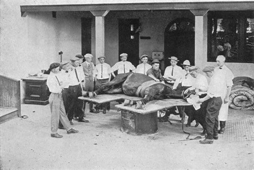
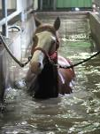
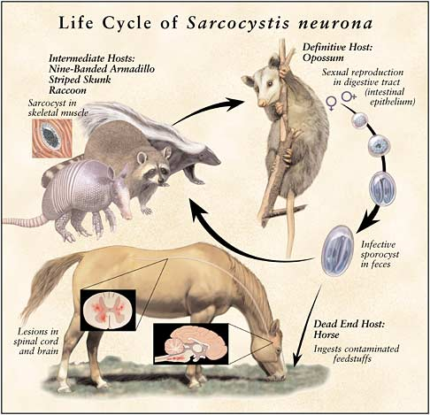
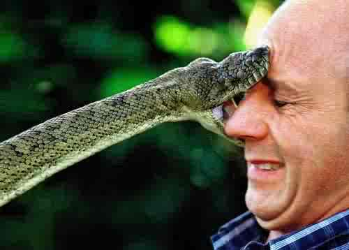
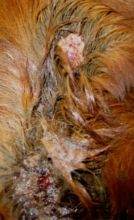
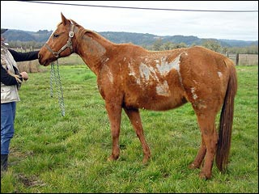
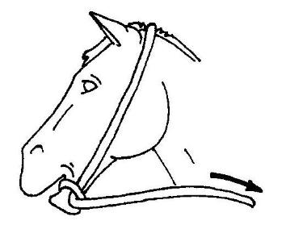
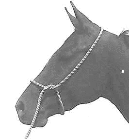

Horsemanship Pages
- *Home
- *Sitemap
- *SEARCH THE SITE
- *Horse History
- *Horseman Tips
- *Horsemanship
- *Amazing Horse Hoof
- *Horse Anatomy Pictures
- *Rope Halters
- My Random Horse Thoughts
- *Tying A Horse
-
*Riding Bitless
Bosal/Hackamores - *Bad Horsemanship
- *Misc Horse Info
- *Trailer Loading
- *Training Videos
- *Hobbles
- *Horse Articles
- *Health and Medical Info
- Horse & Rider Fear
- Opposition Reflex
- *Answers to Questions
- *Cowboy Wisdom
- *Cookie Recipe for Horses
- *Horse Jokes
- *Cowboy Weather
- *Sites and Links
- *A Horse's Prayer*
- *Photos Rick and Horses
- *Clinics on Request*
- *Contact Rick
Think Like A Horse - Horse Health and Medical
Rick Gore Horsemanship

Horses love it when their owners understand them.
Horsemanship is about the horse teaching you about yourself.
Horse Health:
I decided to add this page since my other pages are getting long. I will try and put things related to health and welfare of horses on this page.
Vet Care Today:

Knowledge about the horse has come a long way. One of the best large animal Veterinarian schools in the country is at University of California at Davis (UCD).From the days of working on horses on a barrel and plywood, we have now gone to full hospitals with operating rooms, water and pool therapy. If you have a medical question about horses, UCD is the place to be. I am fortunate to be close to this facility where technology his so advanced. For good information and reading about horse medicine, this is place to find it. Remember knowledge of the horse is the best gift you can give to your horse.
Impaction Colic:
This PDF file has some great information on Colic In horses and is from the leading Vet Hospital's in California.
Here is another PDF file has some great information on 33 Do's and Don't for Colic In horses.
The link below is one of the better articles on colic and impaction I have seen. Some time horses that won't pass can be loaded into a trailer, this response will encourage a bowel movement and may help get things going. If I notice a horse is not drinking or has sweated more than normal (foaming or salt marks on hair) I will dip my dry hay in water before feeding. This removes dust and wets the hay, which helps in getting a little more water and not so dry food into the horse.
Impaction link: Wikipedia Horse Colic
Good Colic Information Additional Colic Information
I still see lots of confusion on colic and causes. I try and make it simple. Natural care of horses is the best way to prevent colic. Natural means not stalled, not fed twice a day, not forced to drink nasty dirty water, grain and supplements in moderation. The reverse causes colic. The things I see contributing to colic is dirty and nasty infested water that is not cleaned. Fish in water buckets create nasty water. DO NOT PUT FISH in your water buckets. Keeping blankets or rugs on horses causes them to sweat and raises their body temp that removes moisture and contributes to colic. Feeding dry hay in solid flakes causes horse to swallow clumps and not chewing or digesting food before swallowing. Starving horses all day and only feeding twice a day causes horses to eat fast and gorge their food; this interferes with digestion before swallowing. A produces 12 gallons of saliva a day, when fed only twice a day they produce much less and that contributes to colic.
Some common signs of colic are: pawing, kicking at belly, laying down or trying to lay down, rolling, staring or motioning to the flank area, stretching out, showing uncomfortable ness in belly or barrel area, some will play in the water or even display the Flehmen Response (neck stretch out, head high, curling lip up), not eating, tail raised, trying to pass gas and just general odd behavior.
Natural grazing, feeding loose grass hay all day, called free choice or free access hay is better. This way a horse is closer to it's natural feeding habit, they are starved and can eat a little bit all day called GRAZING, which is what a horse is designed to do. If I fed you once a day you would stuff yourself, you would be really hungry and eat more and eat faster, not good for you and very bad for a horse.
Lots of fresh clean water, loose grass hay, small amounts of grain or supplements (better half amount twice a day than once a day), open areas to move and walk and nibble and graze since exercise helps in digestion. To me it is simple, yet most do just the opposite of what I say here since it is easier and faster for them and their horse has to pay for their laziness.
Feeding Grains and Supplements:
This is a commonly confused area of horse care. Horses do best with varied diets, no big changes, no fast changes, slow is better, no trying to put weight on fast, no trying to take weight off fast, slow and steady. Horses do best on grass hay period. Any other foods fed can be problematic if overdone. A horse's stomach is only so big, so has it gets full it empties so more food can be taken in. In the wild, horse are not fed they graze 22 hours a day and eat small amounts of grass all day and night. Natural grass has moisture, so water is not as critical, since moisture and water is being obtained while the horse grazes. Much like humans, if we each foods high in moisture or water, we do not need as much water, if we eat dry or foods lacking water, we need to drink more water. So feeding horses dry precut hay or grass is much drier than fresh natural grass.
So how do grains and supplements fit into this? Most grains are dry. So feeding dry hay, dry grain and making a horse drink dirty water all contributes and raises the chance and risk of colic. That does not make grains bad in moderation. I only feed a small amounts of oats/rolled oats, rice bran and small amounts of cracked corn. I DO NOT feed these every day. How often do I feed this, It Depends. My thin horses get a little more than my fat horse or I have my horses share.
Sweet feed is NOT good for horses it is like sweet candy that rots the teeth. Giving Sweet feed as a SMALL treat once in a while, maybe a cup or half of cup, will not hurt them, but DO NOT feed sweet feed for weight gain, heat or nutrition. Sweet Feed is always fed by NEW and INEXPERIENCED HORSE OWNERS, it is cheap and horses love it. When new owners do this they are looking for easy fast shortcuts that end up making a horse pay for their ignorance. All NON grass hay should be fed in very small amounts and in moderation.
How much do you feed? It depends. I never feed big amounts. It is better to feed one half cup three times a day then one and a half cups all at once. The more it is spread out, the better it is for the horse.
Always feed grain AFTER HAY. If you feed grain first and then feed hay, the stomach fills up with grain, then the hay forces it out of the stomach before digested and it is wasted and may increase the chance of colic. So Grain is always fed after hay. This is not done by most since it takes longer, most people throw out hay and leave and if they feed grain the horse will each grain first and then the hay. Lazy or short cuts are NEVER good for the horse.
I feed grain as a supplement, maybe every three days or every other day if it is cold out or less grass out or if I work the horses more or if they are sick or not feeling well and I think they are fighting an infection. If there is lots of grass in pasture and no other issues, they get grain as a treat maybe twice a week. They only get small amounts, maybe a cup or two for BOTH horses. When people try and feed lots or catch up or double the amount or think they are helping, they cause big problems for the horse.
So here is my basic feed and food care for my horses. Kept in open pasture, NO stalls or locked up. Always have lots of fresh CLEAN water available. A salt block and horse mineral block in pasture, in the shade (out of sun) should always available. Carrots and Apples, fiber and moisture foods in moderation. Grain (rice bran, oats, corn) small amounts total amount of all three 2 cups or less, a few times a week unless the horse is healing from injury or sickness or cold or wet or working hard(working hard means ridder over 5 hours a day).
The key with horses is NEVER change their diet fast or big, slow changes and grains after hay so the grain is not pushed out of stomach before digestion.
CAUTION: Feeding too much grain can cause all kind of problems; feeding too little grain can cause NO problems. Seems pretty simple to me. HAY and roughage keeps a horse warm, so does heath, so does exercise, so do wind blocks and shelters, so does grooming before a rain to spread the oils over their coats, so does proper hoof care, regular vaccines, worming and good free access to hay. Horse and care of horses is a PROCESS NOT AN EVENT.
Foal Rejection and Stall Vices:
This is an article from University Of California, Davis, a leading Vet School on horses. It discusses Equine Behavior - Stall Vices and Foal Rejection. It is a PDF so it might take a minute to load but worth the read.
STOP WORMING YOUR HORSES BECAUSE SOMEONE SAYS YOU SHOULD
Here is article by a Vet that explains why worming horses without knowing what worms your horse has is dangerous and NOT healthy for the horse.
Research over the past 10 years has confirmed that indiscriminate deworming leads to selection for worms resistant to common deworming compounds. Because of this, "targeted deworming" based on fecal analysis results has become the industry standard. This approach reduces the total amount of chemical used and better matches drug to worm. But when it comes to equine parasite control, controversy and confusion remains, and there are still many people still "doing it the old way".
In order to be part of the solution to the resistance problem, and at the same time to give your horses the best care, it is important that you know the basic characteristics of the common equine parasites, as well as the basic mechanism and effects of the common deworming compounds.
THE 'CLASSIC' PARASITE LIFE CYCLE
While there are great differences among the important internal parasites, they share a fundamentally similar life cycle. They all spend part of their lives in the horse, and part of their lives in the environment.
The adult worms live in the intestine of the horse, where they lay their eggs. These eggs are passed from the horse into the environment in the manure. On pasture, the eggs hatch over time into larvae. The larvae develop to a point at which they are "infective" and are once again ingested by a horse. The infective larvae mature within the horse into adult worms, and the cycle repeats itself.
Martin Nielsen, DVM PhD, a leading researcher in equine parasitology, and assistant professor at the University of Kentucky Gluck Equine Research center says: "In the environment, parasite eggs flourish and develop into infective larvae when temperatures are between 45 and 85 degrees Fahrenheit. When these conditions exist during the year depends on location but one thing we know is that eggs actually survive much better in cold than hot conditions. There is no such thing as a killing frost for these parasites."
THE WORMS
LARGE STRONGYLES. Historically, large strongyles were considered the most important equine parasites. They were common, and they caused a particularly severe problem in horses called thrombo-embolic colic, in which worms enter, damage and block the arteries that supply blood to segments of intestine. Over the past 40 years, much of our parasite control effort went into eliminating these worms, and to a great extent, we were successful. Thrombo-embolic colic, and these parasites, are now rare in managed horse populations. But those same efforts have caused severe drug resistance in other worm populations.
SMALL STRONGYLES (Cyathostomins). These worms are common in almost all horses. They are small, threadlike worms that can sometimes be seen in manure after deworming. Small strongyle and large strongyle life cycles have similar "classic" life cycle as described previously, but small strongyles show one important difference. Their larvae can burrow into the wall of the intestine and stay there for extended periods in a dormant state, until the environment is optimal for reproduction, at which time they emerge. This makes the species more adaptable. It also protects them from most of our worming compounds, which cannot penetrate the intestinal wall well enough to kill the larvae there. Small strongyles are now resistant to many of our common worming compounds. The only good news is that these parasites do not cause severe disease unless they are present in very large numbers.
ASCARIDS. The most important Ascarid roundworm in horses is Parascaris equorum, a large, pale worm that looks like a large bean sprout. Ascarids can grow to 15" long but are usually smaller. They are considered the most important parasite of growing horses.
Ascarid eggs are extremely resistant in the environment, living for years on pasture. When temperatures warm above 45 degrees, the larvae develop within the egg to an infective stage. The horse then ingests these infective eggs
The eggs are coated with a sticky substance that enables them to adhere to all types of surfaces, including the mare's udder. Mouthy, curious foals pick them up from these surfaces. The eggs hatch in the small intestine, and the larvae penetrate the intestinal wall there and enter the bloodstream. They enter the liver, then go to the lungs, then back to the intestine, where they grow to be adults and lay eggs. The whole cycle takes about 2 to 2 1/2 months.
In large numbers, these parasites can cause ill thrift and poor growth. When a de-wormer is given to a heavily parasitized youngster, large numbers of these worms can die suddenly in the intestine and drift downstream, forming a tangled mass that blocks the intestine and causes severe abdominal pain. This life threatening episode is known as "Ascarid Impaction".
Cleaning up the environment helps reduce the number of eggs a foal ingests, but it is almost impossible to prevent infection in young horses.
Craig Reinemeyer, another internationally respected equine parasitologist and researcher says: "The de-wormers used against ascarids are not effective against early stages of the parasite; they only kill adults, so it is important to wait until 60-70 days before worming young horses." Foals should receive about four anthelmintic treatments their first year, probably all benzimidazole. Ascarids are showing increasing resistance to the ivermectin class and so it may be inadvisable to use it in youngsters.
PINWORMS. Unlike the worms discussed above, pinworms do not cause serious disease. Pinworm adults live in the large intestine near the anus. Instead of laying eggs that are passed into the environment in the manure, female pinworms actually leave the intestine and lay the eggs on the skin of the anus. The eggs are irritating to the skin there and cause itchiness. In rubbing their tail base and anus on stall walls, fences, trees, etc, horses deposit the eggs in the environment. The next horse to lick the object will ingest the eggs and the cycle will repeat itself.
Historically, pinworms have been more of a problem in younger horses, but today they are seen much more in adult horses too. According to Reinemeyer "There is evidence that pinworms are developing drug resistance and new approaches to managing them are needed."
TAPEWORMS. These are very different from other equine internal parasites and are not affected by most of the common de-wormers. One important difference is that tapeworms have an indirect life cycle. To complete their life cycle, they must spend some time within a second "indirect host", a tiny Oribatid mite. These mites live in large numbers on pasture and are regularly eaten by horses when they graze. The mites ingest the tapeworm eggs shed by the horse. These eggs hatch into larvae within the mites, and the larvae grow.
Grazing horses eat the mites containing what are now infective larvae. The larvae are released in the intestine as the mites are digested. They travel to a specific location within the horse's intestine, the point at which the large and small intestines meet (called the ileo-cecal valve). Here the larvae mature into adults over 6-10 weeks, and begin shedding segments containing eggs which again are passed in the manure.
Our ability to diagnose these parasites is poor. "They are usually not diagnosable using fecal floatation techniques and the available blood tests have some problems too." says Dr. Reinemeyer.
The mite hosts are found only on moist, growing pasture. Tapeworms are thus more common in these areas and should not be a problem in dry lot situations and arid environments. Tapeworms are thought to contribute to a condition causing colic- irritation and blockage of the ileo-cecal valve area where they gather. But they can live in small numbers there and usually not cause a problem.
BOTS. Bots are not actually worms, but are the larval stage of a fly that at first glance looks like a honeybee. Bot flies buzz around horse's legs and lower bodies, depositing their sticky pale eggs on the hair. The adhered eggs irritate the skin, causing the horse to lick the area and ingest the eggs.
Once eaten, the eggs quickly hatch within the mouth, and the larvae stay there for several weeks until they are swallowed and attach to a very particular location within the stomach.
The bot larvae spend the winter months attached to this location in the horse's stomach. When conditions are right in the spring, the larvae release and are passed into the environment in the manure. They burrow into the soil and pupate, finally emerging later as adult flies to lay eggs and repeat the cycle. The internal larval stages of bots probably cause no real problems for horses. It is not uncommon to find hundreds of the larvae attached to the stomach in a healthy horse. Probably the biggest problem associated with bots is the annoyance caused by the egg-laying adult flies.
The only wormers that control bots are moxidectin and ivermectin. But aggressive use of these drugs to eliminate bots probably also increases resistance in other parasites.
THE DRUGS
Management techniques are the true cornerstone of effective parasite control - even more important than drugs. The most important aspect of management is prompt removal of manure from the environment, before worm larvae can be ingested by horses. There are many other management points to consider, but they are discussed elsewhere. Here are the common drug types used in horses.
BENZIMIDAZOLES. A class of compounds called "Benzimidazoles" have been a mainstay of equine parasite control for over 40 years. These chemicals interfere with a worm's energy metabolism on a cellular level, causing a slower kill of the parasites than the so-called "paralytic compounds". Familiar examples of benzimidazoles are fenbendazole (Panacur) and oxibendazole (Anthelcide EQ). These continue to have good activity against Ascarids, but small strongyles are now mostly resistant to this class. For this reason, these drugs should probably only be used in young horses.
Another class of de-wormer includes pyrantel pamoate and pyrantel tartrate (the familiar trade name Strongid). These drugs act at the junction between nerve cells and muscle cells, again causing paralysis and rapid kill of worms. Pyrantel does not penetrate the intestinal wall and so will not kill encysted strongyles. There is now significant resistance to pyrantel among strongyles.
Pyrantel comes in several forms, a paste, suspension for tube worming, and at low levels in a pellet (continuous wormers like Strongid-C). Pyrantel at very high dose may have activity against tapeworms. It is generally very safe for all age classes of horse. While continuous wormers have been implicated in resistance, they still may have a niche role in Reinemeyer's estimation "for selected horses on the farm, for a selected time period, but never for life."
MACROCYCLIC LACTONES (Ivermectin & Moxidectin). Ivermectin has been around for about 30 years and has been our most relied upon wormer, but there is evidence now that certain parasites are developing resistance.
Ivermectin and Moxidectin are potent at even low levels. They work by blocking nerve transmission and paralyzing worms. Unlike the other drug classes, macrocyclic lactones also kill external parasites like lice, mites, and larval skin forms involved in summer sores. They kill bots very effectively.
Moxidectin is a more recently developed drug, and has the ability to penetrate into the intestinal wall and kill encysted strongyles. It probably is the most effective compound for this purpose. This drug is not recommended in horses less than 2 years of age, and for smaller equines. One to two treatments of macrocyclic lactone per year will probably control both large and small strongyles, bots and other important parasites in most horses.
PRAZIQUANTEL. This drug only kills Tapeworms. It is currently marketed only in combination with either Ivermectin or Moxidectin . Praziquantel is probably also being overused, especially in regions that have very few tapeworms.
According to Reinemeyer "Diatomaceous earth and other "natural" products have to date not been shown to effectively kill parasites." If you rely on these products, you may be putting your horses at risk.
CONCLUSION
With these basics in mind it may be helpful to consider your own unique circumstance and ask yourself some questions. What is your current deworming program and how do you evaluate its efficacy? Have you changed your approach as the industry has become more aware of drug resistance? Have you done all you can do to reduce the number of worms ingested by your horses? What worms are likely to be a problem for your horses, given your geographic region and management?
With a stronger understanding of the worms and their life cycles, and the drug used to combat them, you can take a smarter approach to parasite control and help slow the onset of drug resistance while still ensuring the health of your horses. Work with your veterinarian to develop a targeted parasite control plan that is tailor made for your situation.
Originally Published in The Horse Magazine, April 2014
Author: Doug Thal DVM Dipl. ABVP
Removing Bot Eggs:
When removing bot eggs off the legs of horses be careful where you do this. The bot egg (The little yellow dots or specks normally on the legs) need to be ingested to produce the Bot worm. So removing these eggs in the grass, in the stall where feeding occurs or over hay that is going to be eaten, helps the eggs get into the horse. This is bad. So when removing or scraping bot eggs off your horse, do it in area where feeding is not going to occur or is not an issue. Especially do not do it while your horse is eating since the odds are some hay will fall and the horse will eat it along with some bot eggs and your horse gets worms. Bot eggs should be removed to prevent the horse from ingesting the eggs, which will give them worms. When a horse scratches his legs with his teeth is an easy way for the bot egg to get into the horse, so it is important to remove them.
Here is a video where I show how to remove Bot eggs from your horse.
Below is a picture of the inside of a horse's stomach - that shows what Bot worms do. This is a good demonstration of why you need to give your horse periodic worming’s and remove bot eggs before a horse ingest them.

COMMENT:
My first horse I bought, we wormed with a strong dewormer that kills everything. About a week later, he coliced, big time. Got the vet out to pour mineral oil down him and kept him moving. I was told to watch his manure for a few days, and when I saw shiny, oily manure, I would know that everything had passed through. In checking his manure the next few days, I saw boat loads of bot fly grubs. Those things are so big. You could use them for fishing bait. We are now thinking the reason he coliced is because we wormed him too aggressively when he had a belly full of worms. It killed them all and then clogged up his intestines. So. My learned from this. If you have a new horse and have no idea when the last time he was wormed, either take him to the vet to see what you are dealing with, or worm him more slowly and with dewormers that don't kill everything at once. After that, I talked with a lady that said she once killed her horse doing just that. She got him to the vet, but died shortly after arriving. She ask the vet to go ahead and examine him to see what caused the colic that killed him. Yep, his intestines were blocked by worms that were killed by the dewormer.?
Lots of old time remedies out there and like most things, some are true, some are partially true and some are just false. Ying and Yang = in all good there is bad and in all bad there is good.
I have to put this one in the partially true category. Like most things I put out, I will give what I see as pros and cons and then you make the decision for your horse.
Tobacco is good and bad and when taken in excess it is all bad. Horses are much larger animals than humans, so an amount that may be bad for us may not be as bad for a horse. Many years ago before modern day wormers were available, people would give some tobacco to horses in the belief that it killed worms and other parasites. Of course, there was no study to prove this was good or bad, but some claimed to see dead worms in the horse poop after giving some to the horse. If too much is given it is can be toxic, poisonous or deadly, like many things less is more.
Now with more modern veterinary care and knowledge there are many tested and proven effective wormers available for a reasonable price. However, in the bush or out in the middle of nowhere, wormers may not be available. If you can get wormers, why take the risk of using tobacco?
Out of control worms will kill a horse, tobacco may be harmful in large dosages but small amounts will likely not kill a horse. If you have no choice I would choose tobacco risk over the worms risk.
Prior to 1940's, there were only natural substances to deal with worms and most had some risk, after all, it something kills the worms, it is not great for the horse, not even modern day wormers. In that time Tobacco was popular since nicotine is known as a mild anthelmintic.
Here is a good link that explains Wormers and Anthelmintic:
Obviously, it takes less of anything to kill worms than a large horse or human. Most of the old treatments were based on folklore rather than fact and when over used they were so toxic to the horse that the cure was worse than the disease.
NOTE: I would not give tobacco to a pregnant Mare or to a new born foal.
Some say that tobacco would strip the bodies from the worms and the heads would stay imbedded in the gut and grow back. Obviously checking to see dead worms in the manure is a good indicator if any wormer is working.
Another false remedy, back in the day, was black walnut trees, if you cut some roots & boil up the mixture and give to horses, it was said to kill worms. There is now evidence that shows black walnuts trees are poisonous to horses. Others things like chicken poop and Mercury were used as de-wormers in the past.
MY CONCLUSION:
With modern wormers, I would stick to them and not try to experiment with my horse's health. However, tobacco is a plant and a leaf, and horses know what to eat and what not to eat. Many say their horse loves a chew or Red Man tobacco as a treat now and then. In very small amounts and moderation, I cannot see it being harmful to the horse. Horses like beer and I do not feed that either, but many do. Again, less is more, if not overdone, it may not be harmful, but why risk it?
Cryptorchid:
 producing male hormones that create stallion behavior. The word means: (Crypt = hidden, Orchid = testes). I got a question from a reader that said she bought a gelding and found out later it was a stallion. After smiling and shaking my head a bit, I started thinking that maybe she was fooled because of a Cryptorchid. All breeds of horses can have this but it is more common in Quarter Horses, Saddlebred's, Percheron's and ponies. Some testes that have not dropped are still fertile. If both do not drop then they are normally fertile, however if only does not drop then it is normally sterile. Sometime the hidden one will drop when given the anesthetic to cut the one that has dropped off. Some vets can feel or find the un-dropped testicle and can pull it down when cutting the one off. So some just have the one gelded and if the other one cannot be found or does not drop then they know the horse may be fertile. Another test can be done to see if the horse is fertile and if he is not, then it does not matter that the horse still has one testicle. However, just because a horse is not fertile does not mean that he will not still think he is a Stud and will still get hormones that could cause Stud like behavior. Why should you care about this? If some backyard Vet does the castration of your colt, he may or may not tell you about this. A castration is easy and can be done locally if both testes have dropped. However, in the case of a Cryptorchid, surgery is normally required. Since this procedure is more expensive, some people may be dishonest (dishonest horse people? - tell me it is not so) and just have the dropped testes cut off and never mention the Cryptorchid. Something to be aware of when you think you have a gelding and he acts like a stallion.
producing male hormones that create stallion behavior. The word means: (Crypt = hidden, Orchid = testes). I got a question from a reader that said she bought a gelding and found out later it was a stallion. After smiling and shaking my head a bit, I started thinking that maybe she was fooled because of a Cryptorchid. All breeds of horses can have this but it is more common in Quarter Horses, Saddlebred's, Percheron's and ponies. Some testes that have not dropped are still fertile. If both do not drop then they are normally fertile, however if only does not drop then it is normally sterile. Sometime the hidden one will drop when given the anesthetic to cut the one that has dropped off. Some vets can feel or find the un-dropped testicle and can pull it down when cutting the one off. So some just have the one gelded and if the other one cannot be found or does not drop then they know the horse may be fertile. Another test can be done to see if the horse is fertile and if he is not, then it does not matter that the horse still has one testicle. However, just because a horse is not fertile does not mean that he will not still think he is a Stud and will still get hormones that could cause Stud like behavior. Why should you care about this? If some backyard Vet does the castration of your colt, he may or may not tell you about this. A castration is easy and can be done locally if both testes have dropped. However, in the case of a Cryptorchid, surgery is normally required. Since this procedure is more expensive, some people may be dishonest (dishonest horse people? - tell me it is not so) and just have the dropped testes cut off and never mention the Cryptorchid. Something to be aware of when you think you have a gelding and he acts like a stallion.
Why do horses get Swayed Backs
This can be caused by lots of things such as poor nutrition, lack of exercise, lack of muscle, poor foot care, age, conformation, poor saddle or pad, over weight rider, having lots of babies, being ridden too early before bones are fully grown and developed. I would say most common cause is lack of exercise = lack of muscle and age. Much like older people get bent over, slouched and don't stand as straight or tall as they get older, same concept.
Recommended Vaccinations :
TETANUS TOXOID; When a wound such as a deep puncture is contaminated, toxins from the anaerobic bacterium Clostridium tetani, which thrives in the equine environment, cause lockjaw and general muscle spasms, usually resulting in death. Vaccinate yearly. Give a booster vaccination at the time of penetrating injury or surgery if most recent dose was more than six months earlier. Broodmares should receive a vaccination four to six weeks before foaling.
RABIES; Invasion of the central nervous system by a virus that is fatal if untreated; it also transmits to other animals--including humans. Recommended yearly, especially in areas where rabid wildlife is reported or areas considered to be endemic.
WEST NILE VIRAL ENCEPHALMYELITIS; A mosquito-born encephalitis that can be deadly to horses and has been reported in all but a few states. Vaccination recommended very six months.
Two West Nile Virus vaccines are now available; consult your veterinarian about the best choice for your horse. If you're vaccinating your horse against WNV for the first time, he'll require a booster after the initial injection.
INFLUENZA; Acute, contagious, viral respiratory-tract inflammation; occurs in isolated cases or in epidemics. Your veterinarian can recommend which form of the vaccine is suitable for your horse. Intranasal Vaccine every six months; add booster two to four weeks before anticipated exposure, such as a show or a long haul.
Intranasal vaccine gives a good immune response when properly applied but can be tricky to administer. If your horse is fussy about substances sprayed up his nostrils, consider using the injectable form. Injectable Vaccine every six months; add a booster two to four weeks before anticipated exposure.
RHINOPNEUMONITIS; Caused by a herpes virus, a contagious infection of the respiratory tract; often induces abortion in pregnant mares. Optional - every six months. Rhinopneumonitis and Influenza vaccines are sometimes administered in a single combined dose. If your mare is bred, consult your veterinarian about a Rhino vaccination schedule to safeguard her pregnancy.
Some Additional Vaccines:
EE/WEE/VEE; Eastern Western Venezuelan Equine Encephalomyelitis, aka Sleeping Sickness, is a vector-borne viral disease causing inflammation of the brain and spinal cord. Vaccinate yearly, in spring (before insect season). Where Encephalomyelitis is common and/or where there are two annual mosquito "blooms," give a booster EEE/WEE/VEE vaccination every six months about a month before the onset of the mosquito season.
Strangles (also equine distemper) "See below"
Strangles / Vaccines Information Links:
Here is a good site with information about Strangles. Be aware this company makes the vaccine so they are somewhat bias, however it appears to provide good information:
http://www.cyberhorse.net.au/csl/strangles.htm
Additional information on Strangles: Click Here
This is another link to UC Davis Vet School site with lots of other info on Strangles.
The link below has a good chart for Vaccines, schedules, etc.
http://www.vetmed.ucdavis.edu/CEH/docs/horsereport/pubs-HR23-1-bkm-sec.pdf

Here is a diagram of the Lymph nodes in a Deer's body, horses have a similar system. I could not find a good diagram of a horse's body for lymph node locations.

The following pictures below, are horse that had strangles and their head lymph nodes blew out with drainage.


The below picture is what is commonly called "Bastard Strangles" meaning it does not blow out in the typical lymph nodes on the head and throat.

By Christy Corp-Minamiji, DVM
Strangles. Even the common name for this bacterial disease-caused by the sinister Streptococcus equi-sounds like something of legend, a cautionary tale inscribed by medieval monks.
The abscesses and pus-laden nasal discharge common to the condition can seem like something from a mythical plague. However, strangles is very much an actuality in today's horse world, a real respiratory disease with a real, mundane bacterial cause.
Though the disease has been recognized in horses since it was first reported in 1251, myth and misunderstanding persist even today. But before launching into the realm of myth, let's take a quick look at the basic facts of the disease.
Cause Streptococcus equi spp equi (frequently referred to as S. equi) inhabits the respiratory tract of sick horses and carriers those horses that might not be obviously sick.
Clinical signs Ashley Boyle, DVM, Dipl. ACVIM, assistant professor at the University of Pennsylvania School of Veterinary Medicine, says the first sign of strangles is often (though not always) a sudden fever spike. In a 2011 article in Compendium: Continuing Education for Veterinarians, Boyle lists other signs of the disease, including "lethargy, depression, bilateral mucopurulent nasal discharge, lymphadenopathy, and abscessation of the retropharyngeal and mandibular lymph nodes." Translation: If your horse has strangles, he might seem very tired and have thick snot made up of mucus and pus streaming from both nostrils, swollen lymph nodes, and abscesses under the jaw and at the throatlatch.
Disease spread Sick horses shed S. equi via these nasal secretions and when the abscesses drain pus. Chronic carrier horses that appear healthy can shed bacteria trapped in their guttural pouches through their pharynx (more on this phenomenon in a moment). Horses can become infected through direct contact with diseased horses; contact with people, equipment, or surfaces that have recently touched diseased horses or their secretions/pus; or common water sources shared by sick or carrier horses.
While some bacteria might travel short distances through the air when a horse coughs or sneezes, Benjamin Buchanan, DVM, Dipl. ACVIM, AVECC, of Brazos Valley Equine Hospital in Navasota, Texas, says he is "not a big believer in aerosolized spread." Rather, he stresses the role of water and stable management: "Water is a critical and often overlooked area of how (strangles) is spread. I've had farms where it spread stall to stall. It turned out they were submerging the water (faucet mouth in each bucket)."
"Water is a critical and often overlooked area of how (strangles) is spread."
DR. BENJAMIN BUCHANAN
Treatment Protocols vary depending on each horse's disease stage and severity when detected and the treating veterinarian's experiences. Practitioners frequently treat uncomplicated cases (those involving lymph nodes that have begun to abscess) symptomatically, with anti-inflammatory drugs to control pain and aid appetite and hot compresses or drawing agents to bring the abscesses to a head more quickly. Letting the disease run its course in this fashion offers the advantage of conferring more complete immunity against future disease.
However, draining abscesses can increase the risk of contamination and disease spread on a farm, so some veterinarians use antibiotics to treat horses with early disease to prevent abscesses from maturing, says Boyle. The downside is that horses treated with antibiotics won't develop as good an immune response against future strangles threats.
J. Scott Weese, DVM, DVSc, Dipl. ACVIM, a professor in the Department of Pathobiology at the University of Guelph's Ontario Veterinary College, says antibiotics "aren't very effective once abscesses develop and are probably only justifiable early in disease and when good infection control measures are being used to prevent subsequent exposure. If you treat with antibiotics but are in a facility where S. equi is still being passed around, the horse may just get it again, and treatment might delay the inevitable."
Possible complications As if strangles cases weren't troublesome enough, roughly 20% of affected horses can develop complications-even lethal ones-according to the 2005 American College of Veterinary Internal Medicine (ACVIM) consensus statement regarding S. equi.
"Bastard strangles" refers to abscess development in the internal lymph nodes-usually in the mesentery (ligamentous attachment of the intestines to the body wall), kidneys, spleen, lungs, or brain. These horses might not show outward signs of the disease, but they can develop fever, weight loss, and life-threatening illness. Boyle says researchers theorize that in these horses the bacteria has spread via the lymphatics and settled somewhere besides the typical upper respiratory system and lymph nodes of the head and neck. But no one knows why some horses are susceptible to this form of the disease and others aren't.
Another twist in the strangles plot is an immune-mediated disease called purpura hemorrhagica-the result of the immune system going overboard in its fight against S. equi. Horses with very high blood antibody titers to S. equi (either from vaccination or prior infection) can develop an excessive immune response when exposed to the antigen (by revaccination or contact with S. equi in the environment). Purpura results in vasculitis, or severe inflammation of the blood vessels. The most common signs are edema (swelling) of the legs, head, and/or lower belly, serum oozing from the skin in these areas, and red spots or blotching of the mucous membranes (in the lips, gums, and inside of the vulva or rectum). Horses with purpura might also develop severe muscle soreness, difficulty breathing, or signs of colic.
Now that you're familiar with the disease in question, here are some myths worth dispelling:
MYTH 1: Strangles is a disease of young horses.
"The biggest misconception is that it's a young horse problem," says Buchanan. He describes a recent run of strangles cases at Brazos Valley Equine Hospital, where for three years, at any given time, a horse was housed in their isolation barn due to strangles. "And not just 2-year-olds," he says, "but also 10-year-olds and older."
Perhaps the severity of strangles signs in younger horses is to blame for this myth. The ACVIM consensus statement authors report that older horses might have milder signs, develop smaller abscesses, and recover from the disease faster than young horses.
MYTH 2: S. equi bacteria persist in the environment for weeks to years.
Conventional wisdom has long held that S. equi can persist in the stable environment for extended time periods. Studies in which researchers examined the organism under laboratory conditions seemed to bear this out. However, Weese and colleagues debunked this notion in a 2009 Canadian Veterinary Journal study. They realized that in prior studies researchers had evaluated the bacterium's longevity only under "ideal" conditions, rather than those of an actual stable, where temperature and moisture fluctuations, wind, and sunlight impact surfaces.
"Stressors in the environment that will take care of (e.g., kill) bacteria will be UV light, desiccation (drying out), and temperature and humidity changes," Weese says. In other words, bacteria prefer a consistent environment, and the real world can do a lot to shorten the out-of-horse life span of bacteria such as S. equi.
Weese and his colleagues found that as few as 24 hours of sunlight could kill S. equi under their experiment's conditions. While he acknowledges that variations in environmental conditions can make a difference, such as protective layers of mucus or dirt, surface texture, and actual sunlight exposure, Weese calls the previously recommended environmental quarantine period of three months extreme. "If you can wipe off the surfaces and get a day of sunlight, it's going to be a pretty quick death (for the bacteria)," he says.
MYTH 3: If you wait two weeks after the last sick horse recovers, the barn is disease-free.
Buchanan says the myth of an arbitrary post-disease "safe zone" is a dangerous one to believe. "Once a horse has been infected, there is no (set) time period after which he's not contagious," he explains. "Unless you test, you can't know he's not contagious." In his practice, Buchanan says veterinarians perform many polymerase chain reaction (PCR) tests to check for S. equi DNA and whether a horse is still shedding strangles bacteria.
Boyle also advocates testing all recovering horses from an outbreak to verify that the disease is truly gone. Currently, she is trying to determine what sampling method is best for detecting carrier horses. But for the moment she believes scoping the guttural pouches, where the bacteria can hide for years in dried out or "inspissated" pus, offers the fastest and most accurate results.
"In endemic barns with a chronic shedder, generally the horse that doesn't get sick and never gets tested is the one doing the shedding," Buchanan adds. "If you don't test you'll have a seasonal endemic problem every year."
These "silent shedders" have had lymph nodes rupture into their guttural pouches during past active infection, leaving pus that has dried out into chondroids. "When the horse swallows (water), it sheds the bacteria," he explains. "One day, the herd immunity is (weak) enough, the horse is drinking water, it sheds into the water, and there's an outbreak."
MYTH 4: Vaccination is dangerous and does no good.
Though some horses might have local reactions to the intramuscular vaccine and, rarely, horses might develop purpura hemorrhagica, Buchanan remains a strong proponent of intranasal vaccination against strangles. "In my (region's horse) population, we consider it a core vaccine," he says. "It's about 70-80% effective. If it doesn't prevent the disease, it will limit the clinical signs." He says his practice sees far more problems from infection than from vaccination, so he and his colleagues consider the vaccine a low risk when used properly.
Other practitioners such as Weese don't consider strangles to be a core vaccine. "It needs to be a risk-based vaccine," he says. "In many areas and in many horse populations, the risk is relatively low, and it's harder to justify, especially with a marginally protective vaccine."
In Buchanan's experience, the benefit of protection outweighs the low risk of vaccine reactions. "Treating a sick horse is expensive," he says. "You can lose a month of showing or training time. We had a farm (in the area) go bankrupt, and a lot of that was due to a bad strangles outbreak that crippled them financially."
Boyle is currently conducting a study examining how long high S. equi titers persist after a disease outbreak. Because of the purpura risk, she recommends either testing titers in horses that have been exposed to the disease or waiting at least two years before vaccinating them against the disease. "Certain horses seem to be hyperresponders," she says. For that reason, she and other practitioners recommend against vaccinating in the face of an outbreak.
"In endemic barns with a chronic shedder, generally the horse that doesn't get sick and never gets tested is the one doing the shedding."
DR. BENJAMIN BUCHANAN
MYTH 5: Antibiotics cause bastard strangles.
Historically, some owners and veterinarians have feared that treating strangles with antibiotics could drive the bacteria deeper into the body, increasing the horse's risk of developing bastard strangles. But Boyle says there is no literature confirming this. For her own part, she says, "I've gotten much more aggressive in using antibiotics" in treating strangles caught in the early stages. "The trick, "she says, "is using the appropriate antibiotics long enough."
She recommends scoping the guttural pouches and monitoring blood fibrinogen levels on these horses to know when it is safe to discontinue administering the drugs. "If you're treating with antibiotics, you probably want to continue at least until the fibrinogen is down into the normal range," and any evidence of infection in the guttural pouches is gone, she says.
Buchanan agrees, saying the concern with discontinuing antibiotics too soon is not having killed all the bacteria.
Take-Home Message
Horse industry participants must fight fear and fiction surrounding strangles with facts. Using smart biosecurity practices, consulting with your veterinarian regarding vaccination, and testing all exposed horses in an outbreak to confirm the disease is gone can go a long way toward taming the strangles beast.
EPM - Opossum Disease:
Clinical signs are almost always asymmetrical (not the same on both sides of the horse).
- Ataxia (lack of coordination), Spasticity (stiff, stilted movements), abnormal gait or lameness- Lack of coordination and weakness which worsens when going up or down slopes or when head is elevated - Muscle atrophy, most noticeable along the top line or in the large muscles of the hindquarters, but can sometimes involve the muscles of the face or front limbs
- Paralysis of muscles of the eyes, face or mouth, evident by drooping eyes, ears or lips
- Difficulty swallowing
- Seizures or collapse
- Abnormal sweating
- Loss of sensation along the face, neck or body
- Head tilt with poor balance; horse may assume a splay-footed stance or lean against stall walls for support
- Three things seem to influence progression of the disease: - The extent of the infection (i.e. the number of organisms ingested)
- How long the horse harbors the parasite prior to treatment
- The point(s) in the brain or spinal cord where the organism localizes and the damage occurs.
Pigeon Fever:
This is a common disease in horses and is commonly confused that pigeons carry it or pass it. This is not true, but many believe it. If you read the snake bite section on this page you will see a link to a video where a chest abscess is cut.
**SEE VIDEO OF AN ABSCESS BEING CUT **WARNING GRAPHIC
Click Here to View Abscess Video
Pigeon Fever Article link
The ever mysterious abscess? Why do they appear, where do they come from and how to deal with them. You will get many different advice and treatment methods. Some may work better than others. I am just going to give what I have seen work and how I treat and deal with abscesses.
Common places for abscesses are hoof, neck and chest, but they can occur anywhere and for different reasons. Common causes of abscesses are trauma, impact, bruise, hot nail, bites, kicks, shoeing horses, Pigeon Fever, Strangles, Bastard Strangles, puncture wounds and other causes.
When thinking of an abscess you can think of a big pimple, the pus inside can be some type of bacteria or infection. The bigger and longer it last the greater the chance that some of the infection can be sent into the bloodstream and can cause other issues like chills, fever or general discomfort.
The beginning of the end of an abscess is when it pops or drains. This drainage can be tested but it may or may not be necessary. Smell or odor of the discharge or pus can indicate what it is. Pus from an infection will stink and the odor will be very strong. Discharge with no smell or odor is consistent with Pigeon Fever.
Treatment varies but normally involves drawing agent (poultice) to help draw the abscess to the surface so it can pop and clear. Unlike other infections, antibiotics alone will not normally cure an abscess. This waiting game can take weeks or months. During this time, you will see swelling, pain, pressure, stiffness and possibly heat or it will warm to the touch, indicating infection. Your goal will be to get the inner pus to the top of the skin so it can pop naturally or to the top so it can be laced or cut to allow it to drain.
Helping an abscess get to the top can be done with drawing agent like Ichthammol or drawing Epsom salts, or hot compresses or a combination of these. Applying the medicine or hot compresses twice a day normally helps the abscess surface. A common Poultice is Epson salt and iodine.
If the abscess is in the hoof soaking the hoof in a bucket or feed pan of warm water and Epsom salts can help. You can also use a diaper. On the plastic side of diaper reinforce with duct tape so it will not tear or leak and on then put the Epsom salt mixture on the inside of diaper and tape around the hoof.
If the abscess is somewhere on the body, applying warm compresses and Ichthammol can help speed up the process and help the abscess reach the surface so it can be laced, cut or punctured.
After an abscess is cut, it can take a while to drain. Keeping the cut or drain spot open will help it to continue to drain. So daily care with warm water or hot compress will help prevent the cut from closing and trapping the infection inside.
With all doctoring, keep the area, your hands and items used clean and disinfected. I keep a bottle of antibacterial liquid soap in my trailer and tack room so I can wash my hands, compresses and other items clean after each use.
So that is my take on abscesses, there are lots of information out there so do your own research and confirm for yourself to ensure your horse gets the best care.
Sheath Cleaning & Bean Removal:
There are some personal cleaning that needs to be done with horses. A gelding or stallion needs to have his sheath cleaned. The sheath is the hole or skin where the penis is pulled back in. You can clean this with just water, but Excalibur is specifically made for cleaning out your horse's sheath. Some people use Ivory Soap (unscented) and warm water. Using warm water sometimes helps a horse drop or relax so you can have more access to the penis. Another tip is to use an old sock, slide your hand in the sock (like a soft glove) or you can use a latex glove and then just rub and soften up the build up of dirt and other debris in the sheath. Make sure you rinse very well and do not use baby oil or other things to clean this area or you will get swelling and irritation that will require a vet visit. Most horses can do with a cleaning at least twice a year. Depending on the horse may require more, but cleaning when not needed is better than never cleaning. Once a month is way too much, some bacteria is needed up there so too much cleaning is as bad as too little. Watch a video on Sheath Cleaning: Click Here
Not only is it important to clean the sheath and shaft for debris, it is also necessary to check for a "bean". A bean is Smegma that accumulates and forms a bean looking wax bead. This is normally found around the urethra and has to be searched out. The surrounding pictures will show you what a bean looks like and how to locate it and remove it. When the horse drops you have to roll the skin back from around the urethra and locate the bean, normally on the top area of the urethra. Remember, don't just try and get this the first time. Do lots of desensitizing with your horse and this area. Your horse has to be very comfortable with you digging around and being gentle in this area, so lots of touching and rubbing long before you try for the bean. This is not a fun job but it is required for the health of your horse. The white/yellowish bean is what you will want to remove. In the last, black and white picture show how the urethra is in the center of rolled skin so that is where the bean will be hidden. If you are still unsure, most vets will do this and clean the sheath for a fee when they sedate the horse for teeth floating. NOTE: If you click on the pictures they will take you to other links that explain this.
NOTE: The pictures are on my Horsemanship Tips Page under Sheath Cleaning.

Hey, Mr. Gore. Just wanted to give you a quick thank you for your videos on cleaning a male horse's sheath and finding and removing the bean. (I know, I know, you probably don't get many emails from women thanking you for these particular videos, but I'm sending you one today).
I'm waiting on my round pen :) and am just spending time with my boy, and have been working on desensitizing that area so that I can take proper care of him as per your videos. Had it not been for your teaching, I would have never known that needed to be done.
I got my horse back in April, I am a new horse owner, and haven't been around horses since I was 15 (22 years ago) and had never heard of a "bean" in my life. But I found your Youtube videos and your site and have been trying to learn all that I can. He's my horse, my responsibility, there are things that I'm going to have to take care of, and this is one of them. (Horse ownership is not for the faint of heart, or the squeamish. There's nothing like poking through fresh horse poo looking for worms, or checking your horse's personal parts for a Smegma ball to make you learn real quick it's not all pink fluffy furry!!)
So, after watching your videos, I did check for the bean, and didn't see anything. But, because I was nervous of hurting him, and because his "degree" of drop had progressed a little too far, I wasn't fully able to look, and just didn't realize it. I've kept trying to work around that area a little at a time because I know I'm going to have to and I want him to be used to me touching him everywhere. (I've even pulled ticks right off his hiney hole--yes, I was afraid of being kicked, but they needed off and he can't do it for himself, so I just worked around his back end, and very carefully and gently took them off--didn't get kicked either).
This morning, I was outside with him (still waiting for that farrier) and he's very relaxed with me and drops all the time - which in my book is a compliment--that he's relaxed with me - so I thought I'll practice looking for the bean, and he'll just be that much more used to his mom being around there. His sheath is in bad need of a cleaning - but I want to just take my time and not freak him out, do not want to get kicked either. So, I rub his belly a little and he begins to drop, I see the urethra and just gently work that area back a little, and oh, my goodness gracious, I SEE THE BEAN. Take my time, do not focus just on that, and in just a minute or two, he let me remove it. I have attached a photo, and in case you can't see it, THAT'S A QUARTER BESIDE THE BEAN. Now, tell me he won't feel better with that gone!!! (I know I'd feel better)
He was a little more relaxed in his drop today (nice and droopy) and I realized that things will move a little more freely than I thought and I saw something. But, I was looking for a little white wax "green bean seed" and this was dark in color (his sheath is dark as well) and for a second I thought it was just what the inside of that area looked like. However, I rolled it back a little farther and caught my breath. It was indeed a bean, and I was appalled at how large it was. I could not remove it on the first try. I tried and he would draw up, so I would back up and just go back to rubbing his back, flanks, hips, and belly, and he would drop again. It took about 3 or 4 tries to get it out, and it was a little more each time, and that's what I want stressed to those women out there.
They may have to check more than once, learn the degrees of drop on their horse (as odd as that sounds) and how that will make a difference when they're checking, they need to know to be patient getting it out, they need to know that they MUST check, I can't imagine how that felt stuck in there all this time. If I can do it, a woman who hasn't been around horses in 22 years, and am such an ignorant beginner that sometimes I feel sorry for my horse, then there's no reason why all the other women horse owners out there who probably consider themselves experts can't spend a little time and get their horse used to being messed with in their personal area and take care of business.
Maybe I'm way off here, but I feel like it absolutely strengthened our relationship and made that trust just a little deeper. He trusted me enough to help him, I trusted that he wouldn't kick me, I know he feels better, he knows I helped him to feel better, and that's a great big horsy pat on the back in my book. Thanks again, had I not seen those videos, I would have never known horses made "beans", and he might have had some physical problems as a result.
So, thank you again, it was pretty gross, and as a mom to 5 little boys, I've seen a lot of gross things, but if it needs done, I want to take care of it, and thank you for showing the way. So, if I can do it, women everywhere need to be checking their horses and getting rid of that bean!! :) Have a great day.
Sincerely, ///END
I sent a thank you note and wanted to post this so maybe others can learn. I can only imagine how many horses have this size of a bean blocking their urine flow and causing pain and discomfort.
What about Horses in the Wild:
And I always get asked, who does this for horses in the wild? In the wild there are no geldings and all male horses breed, I think during the breeding process the bean is either removed, worked out or when combined with the female bacteria the bean does not develop. Other factors could be diet, exercise, fighting, running more, and horses do not live very long in the wild. Regardless, it needs to be done for the health of the horse in our care.
This picture shows the hole above the urethra where the bean is inside so it has to be pushed out.

Signs of late-stage pregnancy in Mares:
- About 2 weeks before foaling, the mare's belly move from a hanging position to a position that fills out her flank area.
- When she has about 1 week to go, you will notice her udder increasing, some mares you won't depending on how many foals they have had.
- About 4 days before, the foal would have moved back into the position to be born.
- About 24 to 48 hours before birthing, the mare's teats will become waxy. This is to stop the milk from squirting out. As the mare gets closer, the 'caps' will fall off allowing the milk to trickle out.
- Before a mare delivers the hips will get very lose and relaxed
- The mare may paw, sweat and pin ears more
- Other signs are enlarged udders with drops of colostrums (the first milk the foal receives), frequent urination, swelling of the vulva and sweating
Floating Teeth:
This is another one of those personal choices and what is best for the horse. Horses in the wild or who are left out to graze all day do not need floating as often as stalled horses that only get fed twice a day. All day grazing gradually files and sands the teeth down so the points do not get as bad as fast. The trend tends to be get them done once a year. I think this is maybe too often, unless it is needed or problems appear. The problem is some Vets will say they need it to get business and others will be honest, hard to know unless you know first.
Nowadays Vets normally give a sedative and do the teeth, called floating or to float the teeth. In the old days you would do your own horse's teeth with a file and just grind down the points or tips so the horse can chew better. Over time when tips and points develop, it can prevent the upper and lower teeth from getting good contact to mash and chew the grass or hay.
If the horse is NOT showing pain, losing weight and is NOT having issues, I say leave it alone or get a Equine Dentist to check them. We humans always want to think we have to help the horse too much. Horses that are in pasture and graze all the time may NOT need floating for several years or until they get older.
Floating teeth may make people feel better, may make Vet's a lot of money and may be done far too often when it is not needed. Horses that are stalled and fed twice a day may need it more since it is not natural for horse just to eat twice a day. Remember horses are only sleep about two hours a day so that other 22 hours is used for eating, moving and chewing.
There are two main reasons for floating horse's teeth:
One - to reduce pain and get rid of the points,
Second - is to improve the function of the teeth for chewing, grinding and eating
Both of these allow for the detection of any other problems
The Pros to having them done once a year is you get an Equine dentist in there to look around, find problems, find clues like ulcers or cuts on the cheek and/or tongue. You will also ensure the jaw movement is clean and able to move laterally for best chewing action. Also if there are problems like a broken tooth, abscess or loose tooth, it can be identified and fixed quicker.
The Cons are, 150 bucks per horse, per year if it is not needed and no problems can be expensive. Injecting your horse with meds and sedatives when not necessary always creates some risk. Your horse can have a reaction, it can cause colic, your horse can get injured when coming out if not done properly and the older the horse the more risk there is.
So it is a balancing decision. Does the pro out-weight the cons, each horse owner needs to make that determination for themselves.
If it ain't broke, don't fix it. I hear lots of people say "if grain falls out of a horse's mouth then their teeth need floating", I say Horse Pucky! Horses don't eat grain in the wild, they each grass, they eat hay, all horses drop grain when they eat it, horse don't close their mouth when they eat and they hang their head down when they eat so gravity makes things fall out of their mouth. A horse's mouth is not made for grain they are made for Hay, grass or long straw food.
Ask a retired Vet if horse's need teeth floating every year, they will tell you probably not, but most people think they do, people feel better and when people want it and are willing to pay for it, the Vet will do it. There are definate Pros to getting it done as I dicussed above. Never ask a Barber if you need a haircut, don't ask a Farrier if your horse needs shoes, don't ask a trainer if your horse needs training and don't ask a Vet if your horse's teeth need floating. :)
With that said, prevention is better than treatment. Having a horse seen and inspected or treated by an Equine Vet can prevent future problems for you and your horse. I think it is reasonable to get your horse's teeth floated every other year or once every two or three years. Your Vet should be able to let you know of problems and if you need it more.
Like anything, the more you know, the better you research and educate yourself about horse health and problems the better care you can give to your horse. I have had several vets look at my horses teeth and have never gotten the same response or feedback. Some say they could use it, some say it would not hurt, some say it is not too bad but it should be done soon and some say if it was my horse I would not do it.
So how do you know for sure? Have an Equine Dentist inspect and explain why your horse needs a float. Understand what is being done, why and how it helps the horse. I have a six part video series on both my horses getting floated by an equine dentist. In these videos I show the inspection, ask questions, show the teeth and points and have the Equine Dentist explain what he is doing and why. The videos should help you understand more so you can make your own educated decision about your horse.
There are lots of reasons why Wild Horses don't get their teeth floated. The word "need" is deceiving.
In the wild horses are rarely fat. They are struggling to survive. They walk more, exercise more, and have to be out in the elements with no man made shelters, so they are working harder all the time. The have to eat more since they are not being fed by humans, standing around in fenced areas and dealing with elements.
So the eating more grinds their teeth more. They also eat things that domesticated horses do not. They will eat bushes, tree limbs, bark and more coarse foods, that also helps grind their teeth down more. They are also not feed sweets, grains and other things that may contributed to tooth decay or tooth problems. And of course, wild horses are products of Natural Selection, the horses with bad teeth, bad hooves, bad immune systems, die off and do NOT pass on those genes. Conversely, with human breeding, sub heathy horses are kept alive and bred so poor and bad genes are passed on, which require more and better care.
So the needing of more food, since their food is less nutritious, combined with their more aggressive diet, helps keep their teeth from developing points and hooks.
Lastly, horses in the wild do not live as long as domesticated horses. So their shorter life span may be contributed to the loss of teeth or dental issues, but no one ever knows unless they are inspected after they die. Other factors that contribute to shorter life spans in the wild, is lack of Vet care, no immunizations, colic issues, hoof problems, teeth issues, diet, predators, disease, injury and other things. In the wild if a horse can't keep up with the herd, it dies, there is no welfare or Government assistance in the wild, so only the strong and wise survive.
A very common ignorant belief for many horse owners is, "the horses in wild don't need this, so I won't do it." Very sad horses don't have a say in their care or who owns them, if they did there would be a lot less horse owners.
Only Males have Canine Teeth, canine teeth are not used for eating or chewing, they are for attacking and defense. Up to 20 percent of Mares can get canine teeth but most don't.
All horses have wolf teeth
Wolf teeth are not gender specific like canines, but not all horses get them, about 70 percent will get wolf teeth
Horse's teeth grow about one eighth of an inch per year, which slows down in their 20s to about one-sixteenth
Each tooth has two points on each side
Horse's top teeth get points on outside next to cheek
Horse's lower teeth get points on inside next to their tongue.
Horse's have 12 Incisor teeth, the front teeth, (6 on top, 6 on bottom) where humans only have 8
Horse's have 12 molars on each side, molars are for grinding & chewing food (total 24, 12 on each side)
Snakebite:
If you ride in a area where snakes are plentiful you may want to carry some pieces of cut garden hose with you. If you trailer out a lot and you may want to keep some hose in your trailer tack room in case your horse or someone else's horse gets bit. Horses like dogs normally get bit in the face when investigating a snake. When this area swells, it cuts off the air supply. By inserting some hose into the nostrils, you can save your horse until you get to a vet. Remember a horse can't breathe through their mouth, so if they lose their nose airway they will die. You can secure the hose with duct tape or other medical tape. These are some good links to more info about horse bites:
http://www.youtube.com/watch?v=VMzvUW6XO-o (Warning: Don't watch while eating, this show the how much pressure, fluid, infection and heat can build up in a (abscess) from a snake bite)
http://www.equisearch.com/horses_care/health/first_aid/snakebite051103/
http://www.horses-and-horse-information.com/articles/0100reptilian.shtml
Proud Cut Geldings:
This is term that refers to a gelding that still acts like or behaves like a Stallion (Stud). Some of these behaviors can be herding, snaking, mounting mares, chasing or charging other geldings and just a very dominate disposition. Some say this is caused by not having all the testicular tissue removed by the person that gelded the horse. I think it also has to do with how old the horse was when he was gelded. The longer a horse remains a Stud, the more traits he will keep after he is finally cut. Testosterone is produced and this can be an additional factor for this behavior. Some people say this behavior can be caused by an over active adrenal gland. No matter the cause, this is not horse's fault and is all instinctive behavior.
Shipping Fever:
This refers to sickness that is caused by shipping a horse. This is a respiratory illness that comes from tying the horse's head high and not allowing the horse to lower his head on long trips. If dust or other foreign objects get into the horses airway, a horse needs to be able to lower his head and expel the object. If the head is tied high, he cannot do that. Combine that the stress of travel and being trapped, with long trips, no stops or breaks for the horse and you got yourself a sick horse. Stress is a powerful immune killer. Extended stress suppresses the immune system in horses and humans. Shipping fever (Pleuropneumonia) can be prevented by allowing the horse to be able to lower his head during shipping or while loaded in a trailer, lots of breaks and rest stops and making trips as less stressful as possible. Signs of sickness can be coughing, discharge from the nose, pawing, kicking, fever, sweating and loss of appetite and no water intake.
** Here is a good health link for horses:www.myhorsematters.com
Rain Rot & Sweet Itch & Fungus Treatments
There are lots of names for rain rot, rain scald, mud scald, scratches, sweet itch ( sweet itch is technically a reaction to gnats and flies, but people still call it rain rot), mud fever, dew poison and others. The basic problem is moisture damp conditions caused by high humidity, rain, mud, dew and or sweating. This area is dark, moist and is prefect for bacteria or fungus growth. Some say diet can help and most common beliefs are zinc and copper in diet. I am not in favor of trying to treat every horse problem with supplements, diet changes, feed and special paste or pills.
When you catch this early it is fairly easy to control. Some say scrape off clumps and clotted hair others say leave it. To me it depends on how bad it is and how long the hair is. Any thrush medication can help, iodine, Listerine, sheath cleaner, anti-bacterial soap or anti fungus med will normally clear it up pretty quick.
Help your horse's hair dry faster. Fluff the wet hair by rubbing against the grain. This will cause it to air dry and help it dry faster. It will also help prevent rain rot or rain scald. Rot happens when the hair stays wet too long and never dries. If there is a break in the rain, brush the hair to remove mud and distribute natural oils. Most horses stay dry under their belly, so a dry brush should be used there first, so you don't wet it and chill the horse. If you use your hands to rub and fluff all the hair you will decrease drying time and increase air exposure to the hair. This will also allow the hair to dry deep in the winter fur and help prevent rot and help your horse to stay warmer if the temp drops. I have heard that using Listerine on the rot will help it clear up, I have not confirmed this, but have heard this from several people. The photo to the right is some severe rain rot, the photo to the left is more common, more of a hear loss. Using a blow dryer works well and sacks the horse out to noise and warm wind. This is just one more thing that the horse will learn not to be fearful of and it will warm him, dry his coat and help prevent rot. Mud scald or mud fever is like this as well.
Over the years, I have got and seen lots of remedies, here a list:
Apple Cider Vinegar
Betadine Surgical Scrub
Zinc Oxide or Desitin
Coconut Oil
Spray with Green Tea
Chlorhexidine
Chlorhexidine (video on this)
MTG
Tea Tree Oil
Nu Stock ointment
Any SULFUR ointment
EQyss Micro-Tek Spray
Wash with head and shoulders shampoo
Listerine
Dr. Naylor "Blu Kote"
Clotrimozole Anti Fungal (if fungal)
Hydrocortisone ointment
Benedryl ointment
Vagisil
Organic Honey
Calamine Lotion
Povidone Iodine
Citronella oil
Neem Oil
Emu Oil
benzole benzoate
Gold Bond Powder for Itching
Stinky Stuff from UK
Mix Sulfur and Lard into salve
Sheath Cleaner (Excalibur)
Vermount Bag Balm
Rawleigh Medicated Ointment
Where's That Blue Stuff
MALASEB medicated shampoo
Worm for Thread and Pin Worms
Wash good with Malaseb medicated shampoo then after it is dry cover good with Sorbelene Cream.
Add small amount of Citronella Oil
Shake well before spraying
OR
Put 1 cup of Apple Cider Vinegar, 1 cup of Listerine (original antiseptic) and 1/2 cup of Water in a spray bottle and spray the affected areas twice a day. You don't need to rinse it off
By Mason V. Reichard, PhD, Associate Professor, Oklahoma State University ; Jennifer E. Thomas, DVM, Center for Veterinary Health Sciences, Oklahoma State University
The last large animal mange reportable to the OIE was horse mange, but this was removed in 2006. Mange in horses was removed from the list of federally reportable diseases in the USA prior to this date, although it remains reportable to some state veterinary agencies.
Sarcoptic Mange:
Sarcoptes scabiei var equi is rare but is the most severe type of mange in horses. The first sign of infestation is intense pruritus due to hypersensitivity to mite products. Early lesions appear on the head, neck, and shoulders. Regions protected by long hair and lower parts of the extremities are usually not involved. Lesions start as small papules and vesicles that later develop into crusts. Alopecia and crusting spread, and the skin becomes lichenified, forming folds. If infestations are not treated, lesions may extend over the whole body, leading to emaciation, general weakness, and anorexia. Negative skin scrapings do not exclude the disease; biopsy may establish a diagnosis.
Hot lime sulfur spray or dip is labeled for use against sarcoptic, psoroptic, and chorioptic mites in horses. Treatment should be repeated every 12 days if needed, following the species-specific dilution on the label. Although certain spray formulations of permethrin are labeled for use against mange in horses, it is generally not considered the compound of choice. If permethrin is used, the animals should be thoroughly wet with the product and re-treated in 10?14 days. Although not labeled for treatment of mange in horses, two doses of oral ivermectin at 200 mcg/kg given 14 days apart (field studies), or a single treatment of oral moxidectin at 400 mcg/kg, have effectively treated psoroptic, chorioptic, and sarcoptic mange in horses.
Psoroptic Mange:
Psoroptes ovis (formerly P equi) and P cuniculi (likely a variant of P ovis) both infest horses. P ovis is rare in horses. However, infestations can produce lesions on thickly haired regions of the body, such as under the forelock and mane, at the base of the tail, under the chin, between the hindlegs, on the udder, and in the axillae. P cuniculi can sometimes cause otitis externa in horses and may cause head shaking. Pruritus is characteristic. Lesions start as papules and alopecia and develop into thick, hemorrhagic crusts. Psoroptic mites are more easily recovered from skin scrapings than are sarcoptic mites. Topical and oral treatments recommended for other types of mange are effective. Hot lime sulfur is labeled for use against Psoroptes in horses (see above). Although not labeled for treatment of mange in horses, oral ivermectin at 200 mcg/kg given for two doses 14 days apart (field studies), or a single treatment with oral moxidectin at 400 mcg/kg, has effectively treated psoroptic, chorioptic, and sarcoptic mange in horses.
Chorioptic Mange (Leg Mange):
Chorioptic mange is caused by infestation with Chorioptes bovis (formerly C equi) and is the most common form of mange in horses. Draft horses are commonly infested, although all breeds are susceptible. Lesions caused by C bovis start as a pruritic dermatitis affecting the distal limbs around the foot and fetlock. Papules are seen first, followed by alopecia, crusting, and thickening of the skin. A moist dermatitis of the fetlock develops in chronic cases. Infested horses may stamp their feet or rub one foot against the opposite leg or object. Chorioptic mange is a differential diagnosis for "greasy heel" in draft horses. The signs subside in summer but recur with the return of cold weather. The disease course is usually chronic without treatment, but the prognosis is favorable when treated. Topical and oral treatments recommended for other types of mange are effective. Hot lime sulfur is labeled for use against Chorioptes in horses (see above). Treatment is aided by clipping long hair from infested areas. Although not labeled for treatment of mange in horses, oral ivermectin at 200 mcg/kg given for two doses 14 days apart (field studies), or a single treatment with oral moxidectin at 400 mcg/kg, has effectively treated psoroptic, chorioptic, and sarcoptic mange in horses.
Demodectic Mange (Equine Demodicosis):
Demodectic mange in horses is caused by infestation with Demodex equi or D caballi. Demodex mites infest hair follicles and sebaceous glands. D equi lives on the body, and D caballi on the eyelids and muzzle. Demodectic mange is rare in horses but can manifest as patchy alopecia and scaling or as nodules. Lesions appear on the face, neck, shoulders, and forelimbs. It has been reported in association with pituitary pars intermedia dysfunction (see Hirsutism Associated with Adenomas of the Pars Intermedia) and chronic corticosteroid treatment. Pruritus is absent; therefore, secondary infections due to excoriation are rare. Therapy is rarely done, although there is limited evidence that the macrocyclic lactones may be effective. Lesions have also been reported to resolve without treatment.
Trombiculidiasis (Chiggers, Harvest Mite):
Trombiculid mites can parasitize the skin of horses, especially during the late summer and fall. The adult mites live on invertebrates and plants; the larvae normally feed on small rodents, but they can opportunistically feed on people and domestic animals, including horses. Lesions consist of severely pruritic papules and wheals on the face, lips, and feet. At the time of diagnosis, a topical pyrethrin or pyrethroid labeled for horses can be used to kill any remaining larvae still feeding. Symptomatic treatment with a glucocorticoid for pruritus can be added to minimize further self-trauma and associated secondary infections. Any secondary infections should be treated. Repellents may help prevent infestation.
Straw Itch Mite (Forage Mite):
These mites usually feed on organic material in straw and grain and can opportunistically infest the skin of horses. Papules and wheals appear on the face and neck if horses are fed from a hay rack, and on the muzzle and legs if fed from the ground. Pruritus is variable. Treatment for trombiculidiasis may be used for straw itch mite infestations.
Lots of talk and opinions on this topic but little scientific proof or study, I will try to shed some light on this.
Sometime a horse's lower lip will quiver, shiver, hang, flap or tremor. Like many things with horses, when a horse does something, you need to look at what other things going on around the horse when the behavior happens. Some say this lip behavior happens when a horse is nervous or uneasy. Others say this is when a horse is relaxed and comfortable. Some say they see it in horses sleeping in pasture, in older horses, stalled horses or in bitted horses. Some time it happens when you are scratching a horse in their favorite place and they extend their neck and the lip will tremble or wiggle. Sometime a gum and lip.
My experience is it seems more common in older horses. When looking at horse behaviors over time, I try to find commonalities with the behavior. Therefore, the things I see with this behavior are older horses, stalled horses and horse with years of bit use. Now most know that I am anti bit, I think bits do damage to gums, teeth, nerves and are bad for horses. So my bias may cause me to connect this behavior, but I cannot remember a horse doing this that had not been ridden with a bit, had not been older and had not been stalled.
Depending on activity, it could be one thing or it could be related to many things. It could be stress, a stall vice, a nervous response, bit damage, stress, age or relaxation.
Depending on what causes the behavior or what combination of things causes it may help understand it. Could it be that older horses relax faster and have learned not to stress so much since they have learned to deal with things better? Could it be a minor not so obvious stall vice that a horse uses as a coping mechanism? Could it be just a droopy lip from sleeping or being relaxed? Could it be years of nerve and bit damage causing the quiver? Like many things in horses, "It Depends".
And there is a distinct possibility that it could mean different things for different horses. Many horse behaviors can have dual meanings. One that comes to mind is a cocked hind leg. That can mean a horse is relaxed or it can mean it is about to kick. A horse passing gas is a sign of relaxation if it occurs when a horse is being groomed, massaged, or relaxed. However, when you load a horse into a trailer or put pressure on a horse it is common for them get nervous, poop and or pass gas.
So if you horses does this, it could be for a varied of reasons depending on what else is going on at the time, the frequency of the behavior, how long it last, what starts it and what stops it. This, like so many other things in horses, is not a clear defined answer. This is why when a know it all horse person always want to run up and give a definite fix, answer or absolute definition of what you horse is doing, this only shows their ignorance and arrogance and that should be a flag in your critical eye.
Intramuscular Injection:
How and where injections in the neck must be given. The correct place is important to avoid important structures such as arteries, vertebra and nerves. A method to identify this area is to:
- Place your hand flat on the horse's neck just behind the halter
- Slide your hand down the neck towards the shoulder blade
- Stop when you reach the front of the shoulder blade
- Spread apart your index finger from your middle finger
- Between your fingers is a good place to give the injection.
The injection should be given in the last 1/3 of the neck, in the middle 1/3, halfway between the top of the mane and the bottom of the neck. A triangle is created by the front of the shoulder, the bottom of the crest and the top of the vertebrae. (See diagram) See this video on how to give injections: Click Here for How to Give an IM Shot
Subcutaneous Injection:

This means injecting under the skin. It is done by picking up a loose fold of skin from the neck or shoulder. Take care not to inject into your fingers or that you push the needle in so much that it comes out on the other side of the skin fold.
Colic Help:
Euthanasia:
 destruction by gunshot is necessary.
destruction by gunshot is necessary.
 water, trails, or campsites and preferably out of sight for aesthetic reason.
water, trails, or campsites and preferably out of sight for aesthetic reason.
What's a War Bridle:
I put this here since this can be used to control some horses when dealing with medical issues.
This is a way to control a horse when no bridle or bit is available or if you want to use a bitless bridle. If your headstall ever breaks or gets torn off by a tree branch or fence or if you ever end up face to face with a horse lose horse, this is a good way to gain control over a horse. It can also be used for a little extra control if a horse is hurt or needs medical attention. It can be very harsh so I do not recommend it to anyone that is too rough
 or relies on force too much. The Indians (native Americans) would ride
or relies on force too much. The Indians (native Americans) would ride  in these bridles for extra control. This bridle can also be used to lay down a horse in a crisis. Here is a good video of how a variation of the war bridle can be used.
in these bridles for extra control. This bridle can also be used to lay down a horse in a crisis. Here is a good video of how a variation of the war bridle can be used.
Twitching:
Although I am not a fan of this, since like a lot things, if done appropriately, can be helpful and when abused do more damage. So I post this with mixed emotions. I can only hope that if you are reading my site, you are trying to learn more about horses and will not abuse them. Twitching strangely enough lowers the heart rate during an unpleasant procedure. A twitched horse's heart rate increases 8%. Horses not twitched during an unpleasant procedure experience a heart rate increase of 22%. The experts say that twitching causes an endorphin release that makes unpleasant experiences less stressful. In Australia, for example, the handlers who load horses into racing stalls used to be allowed a twitch, but that was outlawed some years ago. In fact, most Aussie's think Americans are barbaric for still using this procedure. I stress the phrase, when done or used appropriately. Done properly, twitching can defuse what could be a dangerous situation for a horse. The physical aspect of a twitch is to stimulate the body to release endorphins. This is kind of like giving the horse opium (it gets them stoned or buzzed). It is a powerful relaxant and occurs naturally. One theory is some predators know this and use this to their benefit. When lions grab a zebra, one usually latches onto the nose. That isn't to shut off the air (that's done by the one at the throat), but to release endorphins. It is a natural preparation for death. A twitch has to be controlled, which means it has to be able to be released and tightened as the situation develops. The most common twitches are neck, ear, nose and gum line. The neck twitch is done with the hand and is used to simulate a horse bite. You will see a mommy horse disciplining their young by biting and holding them by the neck area. I have also seen older geldings do this to other horses to teach them. This neck grab will sometime calm a horse and distract him enough that you can mess with an injury or give a shot. The ear twitch is not good or effective and I think, tends to cause a horse to be ear shy. The nose twitch seems to be the one of choice and it can be applied with the hand, rope or chain. Obviously, I don't like the stupid chain idea, but somewhere, a brilliant horse idiot came up with this revelation and decided that if a hand or rope worked then a chain would work better. "NEWS FLASH" - Chains and horses are BAD! So back to the hand, by squeezing the nose endorphins are released and the horse is relaxed and preoccupied with you squeezing his nose, so he is less likely to react to you cleaning an injury or giving him a shot. The gum line seems to be used by Farriers mostly. It may work but once again, there is a propensity for abuse or over use. A twitch is a last resort before using a tranquilizer or other drug. It should not be the first (easy) choice and should be used by EXCEPTION and not routine. (IMHO)
Stomach Ulcers:
I get a few questions on Stomach Ulcers. I think the best thing we can do to prevent ulcers is to keep a horse in an environment that is close to their natural living conditions. Ensuring constant forage and or grass hay is always available. This keeps the horse's system constantly moving and working. Pasture is best, but if stalled this helps as well. Horses are NOT designed to eat like humans. However, many people treat their horse like they would like and normally this is not good for the horse. They are not human, they are a horse. In pasture or by keeping food always available (free choice/free access), the horse's stomach is never empty. Since it is believed that stomach acids produce ulcers, by keeping food moving through the stomach, this does not allow acid to build up or stay in the stomach alone. Of course reducing stress by not keeping the horse alone, blindfolded (fly masks), caged (stalled), uncomfortable (blanketed, hot and sweaty), pampered (over grained/fed sweet feed), also helps.
I like to feed a little before Trailering and immediately after I arrive. This gets something in the horse's stomach for the trip, which can be stressful and fearful. Then by feeding after I unload, I get the system moving and working again to remove any extra acids produced by the trailer trip. I do NOT feed while trailering. A trailer is stuffy and or windy, this blows hay and dust which gets in the horse's eyes and respiratory system, this can make a trip more harmful and more stressful. The same goes for shaving. The problem is most people never ride in their trailer to see how hard it is on the horse. Test it yourself, throw some hay and shavings in the trailer and get in and stand where you horse would be. Have someone take a short trip on a highway, you will be surprised and your horse will thank you.
Proper Horse Weight:
Here is a good link with pictures and explanation about what to look for in a horse that is too thin and too fat. Click here to see proper weight of horses.
Here I am going to talk about good and bad and my opinion about different things I have seen given to horses. I will discuss each topic and then share what I think is good or bad about it. With all feed, moderation and small amounts over a longer period of time is best for the horse. You never want a horse to be stuffed, full or fed a lot of any one thing, expect maybe grass hay. The slow way is the fast way with horse, this is very true when it comes to putting weight back on a horse that is underweight.
Hay: Grass hay is best (rye, oat, orchard, grass, timothy, fescue). Alfalfa is not grass hay, but can be good in moderation and not as a primary feed. Alfalfa and Clover are classified as legumes. The more variety of hay you give horses - the better. Changing hay should be done slowly. That means don't feed alfalfa for a week and then the next day feed oat for few days and then feed rye for a week and then back to alfalfa. This is too drastic of a change for the horse's system. It is better to feed a little of each hay or if you are going to switch from one type to another, do it over a few days, so you would slowly add a little new hay each day and then slowly feed less of the old hay each day, until the switch is made. Throwing some carrots or apples in the hay is a nice way for the horse to find treats while eating the hay. Again, moderation, not an entire bag of carrots or an entire bag of apples, a little is better than a lot.
Beet Pulp: Is sugar beets that has had the sugar removed. It his high in fiber and works good for horses. However, feeding large amounts is NOT good for many reasons. Small amounts 3 times a day is much better than one large amount once a day. Make sure you soak it 15 minutes before feeding. It absorbs water and swells up, so you don't want this happening in the gut. Here is some good info on Click here for info on Beet Pulp for Horse.
Cracked corn: Good supplement in small amounts, a half cup once or twice a day is plenty. Too much corn is not good and has too many starches. Some say corn is not good at all for horses and can sour in the gut, but in small amounts I think it is fine and healthy for the horse. Horses have been eating corn for many years.
Sweet Feed: This is ok for a treat but not for food. Too many people feed this as a grain supplement, this is not good, it has too much sugar and fillers. Horses like it but it is not that good for them. So small amounts are ok for a treat only, but not as a food source.
Are Apples seeds Poisonous? This is another myth out there. Apples are NOT going to hurt a horse unless you are feeding them two or three cups of just apple seeds. It takes one cup of apple seeds to poison a human, so unless you are feeding your horse just cups of seeds, it is nothing to worry about. So even if you feed your horse an entire tree of apples, you would still not get enough seeds to hurt them. As for Crabapples some horses eat them, some don't, they don't appear to be bad and I have not seen a horse die after eating one.
Probiotics: Again in moderation. Lots of people out there want to overdo things with horse. Less is more in most all things with horses. Too much of anything is not good for the horse. There is some stuff called "ProBios" that is a paste and comes in a tube. It's Probiotics. I have heard it works well for a horse that gets a belly ache or mild colic. Keeping some in the trailer is not a bad idea, just pay attention to the expiration date.
Calming gels or Calming supplements: Not good and they are over used and they do not work for what they are used for. Horses are active and need exercise to move, play and run. Keeping a horse locked up and then calling it hyper or over active is foolish and then these same fools will give calming aide and think they are doing good. These are cheats, they set you and the horse up to fail, do not give them and beware of those that use them, for they do not know what they are doing.
Bute: This is a pain killer anti-inflammatory and should be used very rarely. This drug is way over used and given to horses way too much. Since this blocks pain, a horse does not know that it should not run since it does not feel the pain. Pain is good for the horse to know to slow down and do less. When Bute is used too much it sets the horse up to fail and allows the horse to do more damage and prevents healing. So like many things in horses, the things people try and prevent, they end up causing. Giving Bute too often is hard on the horses stomach and can cause bleeding of the stomach, yet many people give this to horses like candy and wrongly think they are helping the horse.
Salt or Mineral Block: This should be a must for a horse to have access to anytime they want. This provides needed minerals for the horse to stay healthy. Without it many other issues can occur. Ensure your horse always has access to a salt, selenium and mineral block to promote good health and a good immune system. Some horses will lick dirt or eat tree bark to supplement their diet. All normal horse behavior and should not be alarming. A lot of horse feed is low in sodium and chloride so having a salt block available is good for the horse. Make sure you use blocks that are made for Horses NOT cattle.
Rice Bran: This is one of my favorites. Good fiber, low in sugar, low in carbohydrates and packed with vitamins. Like all things, moderation, small amounts twice or three times a day. Remember this is given as a supplement, not as a primary food source. If I could give my horse only one thing other than hay, it would be rice bran or oats.
Apples, Carrots, Watermelon: All good natural food sources and horses love them. All have sugar so feeding them all the time is not good, moderation as a treat. My guys get one most every day, watermelons mainly in the summer. Some horses eat the rind, some don't. I just throw a whole melon in the pasture and let them bust it open and eat what they want. The seeds will not hurt them. Again, you would not feed all three all day as a food, only feed as a treat or supplement in moderation.
Sugar cubes, Peppermints, Candy: I don't care what you hear this is not good for your horse. It is processed sugar and sticks to teeth. It will rot teeth and cause dental issues. Do not feed them to horses and don't allow other to feed them. Yes horses eat them and they like them, but they are NOT good for horses.
Beer or other Carbonated Drinks: Same as above - not good, can cause colic, un-natural, rot teeth and NOT good for the horse. Do not feed any of these to horses.
Old lettuce or Vegetables: NO - if you won't eat it, don't give it to horses and this is not natural food that horses would find if grazing. It is not made for a horse and should NOT be fed to horses.
Corn Oil: Another over used supplement that is NOT good for horses. Corn Oil is high in omega 6, which is pro-inflammatory. So although many will say it will make the coat shinny and puts on weight fast (fast is always bad with hoses), it is over used and you will see people putting as much as 2 or 3 cups on the food, that is absolutely foolish. A small amount like a tablespoon is much less likely to do damage, but two cups would be like me giving you a cup of vitamin C tablets each day. Trying to use this cheat to put on weight on a horse fast is NOT good for the horse.
Oats or Rolled Oats: This is a good safe supplement for horses. It is good for the horse and will not hurt the horse. It puts on weight, gives energy, digests well and does not have any bad side effects. Some will say it makes a horse hot. These are the same people that will give a horse "calming" supplements, they are scared of their horse, they are not horsemen and they look for gimmicks to compensate for their lack of riding or handling ability. They are everywhere so watch for the gimmick horse people, they thrive at barns.
Cribbing Confused: Cribbing is very different from eating or licking bark or dirt. Some trees my horses will strip every bit of bark off, unfortunately it kills the tree so that is not good. Some trees I will break branches off and my horses eat the leaves, branches, and others they will only eat the leaves. This is not cribbing. I have heard people call this cribbing when they see a horse eating bark or chewing on a tree. Bark and leaves is a natural supplement that horses instinctively eat sometime.
Cooked Oat meal: This is a good warm feed when cold, once or twice a week would be fine, you could mix some flax seed or fiber in, again not big servings, better to give a cup or two in morning and a cup or two at night, than to give 3 or 4 cups at one feeding. Less is more, not a lot, so a cup cooked not a cup dry and then cooked.
Free Choice Hay: This is a feeding method that is best for horses and simulates grazing and continuous feeding. Free Choice or free access is having hay available for the horse at all hours. This eliminates the need to feed twice a day and prevents a horse from getting so hungry that he eats fast and does not chew or digest his food. Keeping hay available at all times allows a horse to eat slow and graze throughout the day. Remember a horse only sleeps about two hours a day, that leaves a lot of awake time for grazing, eating and occupying time, so this will also decrease the chance that your horse will develop cribbing or other harmful vices.
Shots Boost Immunity for Health: Get your horse seen by a vet at least once a year, preferably twice a year for their shots. This helps keep a horse's immune system working and helps build up immunities for other issues. This also gives a vet a chance to find or notice other issues with your horse.
Fresh Clean Water: Last but probably most important is fresh clean water. I can't mention this enough. This is the easiest thing to do and seems to be the most neglected thing that is not maintained. Fill the water bucket every day, forget those auto-fillers, they will break and make you lazy. Check the water every day and clean at least once a week. By seeing the water every day you can tell how much your horses drink, you will find dead animals that have drown in the water buckets, you will spend time in the area and may notice other issues. When cleaning the buckets each week use Bleach, I discuss this on my Horseman Tips page.
Like most horses questions, It depends. You have to see the horse poop daily to establish a normal look or what is normal. Too runny is not good and too dry is not good. A good rule of thumb is it should be in balls and should be moist enough to break open when it hits the ground. If the balls don't break when they hit the ground, then maybe the horse is not drinking enough, could be a little dehydrated or could be running a temperature or have something else going on. If it is too runny, the horse is losing too much water so something else like virus may be going on or the horse could have just changed diet, could be nervous or stressed, might have ate some rich grass that contains a lot of moisture or something else. Most all horse poop in horse trailers are runny - why?
I think the key is knowing what is normal and being aware of changes. That could be changes in environment, changes in new horses or new stresses, changes in feed, working conditions, weather conditions, diet, recent worming medicine, recent shots or immunizations, loss of buddy horse or other friend, etc. Many things can cause a change in your horse's fecal consistency. Making sure it is temporary and knowing when it changes and then connecting it too what may have caused it, will help you stay on top it and know when you need to get a Vet involved or let it run it's course. Obviously any blood, worms or foreign material is cause for concern.
You always want to make sure the horse has a good supply of fresh clean water, grass hay and a salt and mineral block for nutrients and then monitor changes in behavior, temperature, disposition, signs of discomfort or changes and then maybe connect those changes to the change in poop. So I hope you can see a trend in all horse questions that may seem simple but in reality has many variables and it always comes back to It Depends?
I am not a fan of too much of anything. I don't like people taking shortcuts to get benefits with horses. Unless some thing is made for horses and has proven positive results and NO negative benefits or risk, then I don't promote it or use it. When asked if you should feed garlic to horses, my first response is do they eat it in the wild? Do they have access to it in the wild? If the answer is NO then my gut is NO.
There appears to be lots of research and evidence on WHY NOT to feed garlic to horses and very little other than feelings or beliefs on why to do it. I DO NOT feed my horses garlic. I have attached some links below and took some excerpts from each link to hopefully educate you to make an informed decision. To me, if you feed garlic you are taking an unnecessary risk and putting your horse's health in jeopardy.
There is evidence to suggest that garlic can be harmful to your horse, specifically that it causes hemolytic anemia, anemia which results when red blood cells rupture.
The toxic element in allium (a family of plants including both garlic and onions) is well known to be a chemical called N-propyl disulfide. By altering an enzyme present within the red blood cell, it depletes the cell of a chemical known as phosphate dehydrogenase (PD), whose job is to protect the cell from natural oxidative damage. "Journal of the American Veterinary Medical Association," the toxic dose in horses turned out to be considerably less than the 5 grams per kilogram of body weight reported in cows. Until these suspicions are investigated and repudiated, how much risk are you willing to take?
However feed with care as it is being discovered that there are dangers in feeding too much garlic as it can cause anemia in horses. There is a toxic element in Garlic called N-propyl disulfide which can change an enzyme within a horse's red blood cells, it depletes the cell of a chemical known as phosphate dehydrogenase - whose task is to protect the blood cells from damage caused by oxidation
Paradoxically, garlic in its pure form can't be deemed completely safe. It's possible that the herbs suspected antimicrobial proper-ties may with long-term use damage the beneficial hindgut bacteria vital to a horse's digestive system. This could allow unfavorable bacteria to flourish, creating imbalances in the digestibility of forage and in the overall health of the gastrointestinal tract.
It's up to the horse owner to decide if she wants to try garlic. But my horse has enough problems without giving her something that could cause harm and has no scientific research to prove its value.
By the end of the 71-day supplementation period, horses offered garlic developed signs of heinz body anemia, as characterized by the presence of heinz bodies in their red blood cells, decreased red blood cell count, hemoglobin, and increased billirubin.
Care needs to be taken in feeding garlic to horses as too much garlic may cause anemia. Do not use garlic if a horse has been scouring chronically, and use caution if you are feeding garlic to nursing mares as it may flavour/taint the milk and upset the foal's digestive system.
Poison Information: Horse Report Poisons
Here is a good link to research if you suspect your horse has been poisoned.
First, I am not an expert on a horse's digestive system. I am a common sense guy. If it sounds too good to be true, then it probably is. If it sounds unreasonable or stupid then it probably is.
A horse eats grass, a vegetarian, so feeding a horse meat, meat by-products or any form of something that does not grow in the wild and anything that would not be a normal part of a wild horse's diet, is foolish to me.
With that said, I can hear the wheels turning in your heads. Let me say it, well Rick what about wormers or shots or grain, they don't have that in the wild and I hear you say you give that to your horse. Feeding rolled oats or oats is simply parts of Oat hay, so oats is a natural food. Wormers and shots are medicine or preventive health care that has been tested and proven to extend the horse's life. You can still find some that say don't give shots and don't worm, so it is still a choice, but the data is over-whelming that it does more good than harm. If the facts or data changes then some people may also change their position.
As for this high protein, special work horse feed, or show quality grain, or all these special supplements for better coats, better hooves, better muscles, better whatever, too much of anything is NOT good.
NOTE: Horse Behavior Problems should NEVER be fixed with food, grain, supplements or medicine. However, some behavior can be caused by over feeding, over graining, over supplementing and over medicating. It that is confusing, tough, not everything is black or white or has a easy perfect answer, get over it.
I cover this in other places, but I will say it again. Less is more with horses. Less help from humans, less food, less supplements, less sugars, less grain, less medicine, less trying to save the horse, less trying to train the horse, less horse riding gear, less pain devices, no shoes, no bits. I could on but I think I have made my point, if not, stop reading and leave now you are not smart enough to keep up with me.
If you are still here and still wondering what I am going to say about feeding Yogurt to horses, let me try and be clear, I think it is stupid to feed Yogurt to horses. I cannot find any supportable data that supports how this helps a horse. There are lots of people that feel it helps, that want to think it helps and want to justify why it should help, but I do not decide my horse care by wants, feelings or love.
I have put some information that I have found that supports my belief. What I found from my research confirmed my initial gut reaction when I heard that this new trend, which I guess is somehow cool to be in a click at barns so everyone jumps on the stupid wagon without thinking or researching something, before they make their horse a test subject for their ignorance. So read on to see some of the information I used to come to my position and then do what you want.
(I found the following on the internet but forget to copy web address, so if anyone finds a copy/use issue let me know)
-- In essence, yogurt has its place (provided it has the "live culture" as noted above). However, its benefit to horses is limited. LAB (lactobacillus acidophilus) is found in the gut of horses, but when there is digestive upset, generally, the problem is related to acidosis. The gut pH turns acidic and the only bacteria that flourishes in that environment is LAB. The LAB takes over, prevents other beneficial bacteria from re-colonizing and you get things like chronic diarrhea, bouts of colic, weight loss or even chronic laminitis. The goal of any good "probiotic" should be to help maintain and rebalance as much of the gut bacteria as possible. With that said, if a horse has been on a course of antibiotics, de-wormed or had other chemicals/drugs that might have been used to "kill things" in the gut, essentially all or the majority of bacteria may have been killed off. At that point, LAB seems beneficial as there are little to none left and replenishing any of the bacteria is better than doing nothing.
-- The primary source of gut bacteria is the environment....for foals it is the mother's excrement and or the mare's licking of the foal's mouth area. For adult horses, it takes an entire day of grazing to maintain the bacterial colonies. So, any horse that is not on pasture most of the day, most likely will benefit from a daily dose of Probiotics (actually referred to as "prebiotics"). For helping to reintroduce bacteria a "probiotic" (products that contain 1-3 species of gut bacteria) is beneficial in short-term doses.
-- While it was once considered that any probiotic...including yogurt...was beneficial in all cases, this mode of thought has been proven wrong in the last 4-5 years and is/should no longer be recommended. Probiotics are the better choice for maintaining a healthy horse. There's specific Probiotics for a horse, although expensive but actually designed for them.
- I'd rather give my horses a course or Proxetin than fiddle around with yogurt.
- There may be some acidophilus in fermented milk products such as yogurt and kefir. However, most commercial yogurts are made with Lactobacillus bulgaricus or Streptococcus thermophilus. Although these two organisms possess some health benefits, they will not colonize in your intestines. On the other hand, the highest quality supplements are made with "super strains" of Lactobacillus acidophilus. These strains are designed for maximum clinical effectiveness. They also do not die as easily and are more likely to survive the digestive process in your stomach. So if you are looking for positive results, an acidophilus supplement is a better choice than yogurt. Most Yogurt contain sugars and sweeteners, sweetening agents and sugars can destroy beneficial bacteria, so that is another reason Yogurt is not a good choice.
Veterinary Topics: Pros and cons of Probiotics
Posted: Saturday, January 29, 2005
Pastes and powders are designed to help horse's intestinal bacterial environment MANY EQUINE issues and problems can be more easily understood if we simply look at the horse differently.
If you think of a horse not as a model of athletic ability composed of muscle, bone, and tendons but as a giant fermentation vat on four legs, you can better understand colic, laminitis, colitis, and many other problems that relate to the bacteria that reside inside a horse. In a healthy state, the horse is host to billions of bacteria of differing types and functions. There is a constant war between various bacteria competing for raw food materials (grain and fiber), and the horse is constantly cleaning up after all its organisms by chemically altering and removing toxins from its body. For example, recent research by Chris Pollitt, BVsc., Ph.D., at the University of Queensland School of Veterinary Medicine in Australia has shown that ingestion of pasture grass in certain environmental conditions leads to excess fructan production in the gut of horses. Fructan is a specific type of carbohydrate derivative. This substance is selectively fermented by the bacterium, Streptococcus bovis. Large amounts of fructan result in a very rapid and very large increase in the number of S. bovis organisms. These bacteria produce massive quantities of toxin-specific proteins, which normally are used to break down the capsule of starches, but in large quantities damage the intestinal lining of the horse. These toxins, called proteases, leak through the inflamed intestinal walls into the horse's general circulation. Toxins in the blood, or endotoxemia, cause damage to the blood vessels of the hoof, which leads to laminitis. This example of laminitis and many other equine disease conditions are similar because they all start with microorganisms. Simply put, when it comes to many diseases and problems in the horse, it is all about bacteria.
Developed for beneficial environment
In normal, healthy situations, the various bacteria in the "fermentation vat" that is the horse are in an equalized state and exist in harmony. The horse receives a re-supply of bacteria from its environment through grazing, and so-called good and bad bacteria live in balance. Horses under stress, however, are at risk of having an upset balance to their bacteria and are at greater risk for bacterial toxin-related illnesses.
Probiotics have been developed in an attempt to help the body re-establish a balanced intestinal bacterial environment (microflora). They are marketed as either pastes or powders and are commonly given to young foals, horses being trailered or in competition, and horses in many other situations. These products are commonly defined as live microbial feed supplements, and they have been available for nearly a century.
Their name was coined to counterbalance the term antibiotic. It was felt that there were good and bad bacteria and that antibiotics were used to kill bad bacteria, while probiotics were taken to maintain and help good bacteria. Early forms of probiotics, such as fermented milk products, that were consumed by members of certain nationalities were linked to the increased longevity often seen in those cultures or geographic regions.
The key feature of probiotics is they exert health benefits beyond their inherent nutritional value, but, even though they have been used for years, exactly how they work remains unclear.
Use is specific
J. Scott Weese, D.V.M., D.V.Sc., an internist at the Ontario Veterinary College at the University of Guelph, has lectured on the use and misuse of probiotics. Weese acknowledges there remains much to be learned about how and why probiotics work, and he points to this lack of step-by-step physiological understanding as a reason for the wariness and slow acceptance of probiotic use among the scientific community.
"Part of the reason that probiotic treatment is approached with skepticism," wrote Weese, "is that the mechanism of action is not fully understood."
This lack of scientific certainty about probiotics has led to wide-ranging marketing claims and unrealistic promotional material. Many companies produce probiotic products that contain inappropriate bacteria or inadequate numbers of bacteria to be effective. This can lead to treatment failure and dissatisfaction with probiotics among horse owners and trainers. "Probiotics are specific tools, not cure-alls," said Weese, but they do have their place in the spectrum of medical treatment. Just as the right antibiotic must be used for the right condition, probiotics should be used in a similar manner.
Intestinal benefits
Many conditions in horses can and do benefit from probiotic use. They include diarrheal diseases caused by bacterial action, which are specifically responsive to probiotic use.
Speakers at the 2004 American Association of Equine Practitioners Convention in Denver reviewed human research, which showed that microbial cultures given to severely ill patients via stomach tube resulted in encouraging improvements in those individuals. Colitis (inflammation of the colon) in horses caused by Clostridia bacteria or by Salmonella organisms can be helped by probiotic use as part of a comprehensive and aggressive treatment plan. Probiotics have been advocated for the treatment and prevention of diarrhea in young foals and have been especially effective against rotaviral infections. Some types of probiotics have been shown to influence antigen transport in the small intestine of humans. Antigens are the active particles that cause the body to recognize things as foreign to the system and to react against them. Because some probiotics react with antigens in the intestine, some researchers feel these products might be useful in the treatment of food allergies and that probiotic use might reduce cases of colic, ulceration, and malabsorption.
Young and aged horses might benefit from probiotic use because their intestinal tracts usually are not functioning at peak efficiency. Foals lack a fully balanced level of bacteria in their systems and thus cannot completely and effectively digest food. Aged horses often have intestinal scarring or other conditions that make it difficult for them to digest and absorb their food. Many feed companies have recognized this, and most diets designed for elderly horses contain probiotics and bacterial growth enhancers.
Yogurt example
Horses that are being treated with antibiotics and horses with chronic diseases also are candidates for probiotic therapy. Antibiotics destroy certain bacteria and often allow for an overgrowth of other remaining bacteria. Colitis can occur as the remaining bacteria produce enough toxins to irritate and damage the intestinal lining. The use of probiotics helps promote good bacteria that can compete with and possibly outgrow bad bacteria and limit the amount of toxins produced. An example of using probiotics is giving yogurt or fermented milk to sick or stressed horses, a common practice among trainers and veterinarians for years. As we have come to learn, however, only certain strains of bacteria in certain numbers are effective.
"Common yogurt products," wrote Weese, "contain strains of bacteria which have no demonstrable probiotic effects, and actual research on the benefit of yogurt use has been disappointing." Many old-school horsemen would disagree; there are many stories of horses saved by the administration of fermented milk and similar concoctions.
Since researchers still do not know exactly how or why these products work, it might, in fact, be difficult to measure the intrinsic ways that probiotics help horses. More research is clearly needed, but there is enough science and enough historical lore to justify the continued use of probiotics. Keeping the right mix of bacteria makes for a balanced fermentation vat and for a healthier horse.
Kenneth L. Marcella, D.V.M., is a practicing veterinarian in Canton, Georgia.
Ok, that is my take on Yogurt, when people start guessing or trying or experimenting with their horse's health, as usually, the horse pays for stupid owners. I try and put out information so horse's get a better a life. Agree or disagree, but at least know that your choices and decisions can make your horse pay, so don't take that responsibility lightly.
This seems so simple to me and the short answer is a big fat, "NO." However, for those who are familiar with all the problems and issues with this, it may seem perfectly normal to think horses eat grass and all grass is the same.
There are lots of issues and problems with feeding or allowing a horse to eat grass clippings, so I will give you my SHORT list why I DO NOT recommend this:
Some yard grasses are toxic to horses.
Lawns may have fertilizer and weed treatments (sprays) that are toxic to horses.
Grass that is decomposing can cause gas buildup in a horse and cause colic.
Grass is cut in summer and heat speeds up the decomposing process.
Clippings are small so horses eat them faster so they can ball up and choke a horse.
As organic material like grass sits, it becomes a host for growth of mold.
Fresh cut grass can start the buildup of Clostridium botulinum, bacterium for botulism.
Moist grass breaks down carbohydrates and can start growth of toxic organisms.
As carbohydrates break down, molds and bacteria begin to rapidly multiply.
Decomposing organic compounds in grass allow bacteria and molds to flourish.
Mowers can get grease, mold and other bacteria on the grass as they cut.
In hot moist summer weather mold develops in clippings in only a few hours.
Decomposing grass can form botulism toxin, which when eaten can cause botulism.
Grass makes Silage and that changes PH in a horse's stomach, causing colic.
Eating decomposing or fermenting grass can cause colic, gas and other problems.
Lawn grass is higher in sugar than pasture grass, NOT good for horses.
Toxins rapidly multiply in a horse's gut and they can be lethal.
Changing a horse's diet abruptly will upset the digestive system.
Lawn clippings dramatically upset the balance of microbes in the hindgut.
Lawn clippings can cause or start Laminitis - which leads to all kinds of problems.
So, on the surface it may seem reasonable or normal to feed horses grass. Upon closer look, I hope you can see that nothing is easy with horses and the choices WE make can help or hurt our beloved friends. A horse's system is designed for slow grazing all day with a constant supply of proper grass. Consistency in feeding is healthy for horses, so changing their diet arbitrarily is NOT good for the horse. Remember a horse only sleeps about two hours a day, so they have 22 hours a day to graze, look for food, keep their mind occupied, walk, exercise, explore and carefully choose what they eat. When humans decide for the horse and remove those options and choices, the horse suffers.
Note: Consistency of diet refers to consistent types of foods, pasture grass, rye grass or oat grass, when changing from one grass to another; you want to do it gradually and slowly, not abruptly at one feeding. All changes in diet should be done as slowly as possible in order to give time for the horse's digestive system to adjust.
After reading the above list, I would hope you are convinced that feeding horses lawn clippings is a bad idea and will most likely harm or kill your horse.
I have put a link to a good article on this if you want more information and have copied the article in case the link goes bad. Read it below or Click Here
Reprint courtesy of Kentucky Equine Research, Inc.
Contact KER's Australian office at www.ker.com.
Chances are good that you've already revved up the lawnmower this season and have begun cutting your lawn. If you're like countless other amateur landscapers, your mind wanders from topic to topic as you're pushing or riding the mower to and from.
If you're a horse owner, you've probably asked yourself this question as cut grass shoots from beneath the mower deck: Why can't I rake up these lawn clippings and give the horses a treat?
Yours is a familiar question, but what's the best answer?
To answer it properly, you must think about your horse's diet and the decisions you make for him daily as well as the decisions of those whom you trust with his health.
If you do this, the answer to your question will quickly become apparent.
For the sake of consistency
One of the tenets of feeding management is consistency - both in feed type and times of feeding. The horse's digestive system adapts to a certain diet and does amazingly well on whatever limited menu he is offered daily, be it primarily pasture and a vitamin/mineral supplement or a full-fledged ration intended for an intensely worked athlete.
Any abrupt change in the diet can upset the delicacy of the digestive tract, throwing the entire system into chaos and possibly causing colic or founder.
"Feeding lawn clippings will dramatically upset the balance of microbes in the hindgut, potentially leading to colic or laminitis," said Larry Lawrence, Ph.D., a nutritionist with Kentucky Equine Research (KER).
"The amount of highly fermentable carbohydrates in regularly clipped lawns is dangerously high.
Excessive intake results in a high rate of fermentation in the hindgut. Accelerated hindgut fermentation can produce increased amounts of volatile fatty acids, which, as their name implies, are quite acidic," continued Lawrence.
"In addition to volatile fatty acids, a surplus of lactic acid will be produced. Lactic acid is not utilized or absorbed well in the hindgut. This increased concentration of acids brings about a condition called acidosis that lowers the pH of the hindgut.
"The acidic environment created by fermentation of grass clippings in the hindgut causes microbes to die, releasing into the bloodstream endotoxins that can cause laminitis," said Lawrence.
Problems too risky to chance
Another aspect often overlooked by well-meaning horse owners is how lawn clippings will affect individual horses with certain quirks or conditions. When a horse grazes, he must go through the motions of selecting, ripping, and thoroughly chewing grass.
When a pile of lawn clippings is placed in front of him, the horse can consume the cut grass much more quickly than if he were grazing naturally. If your horse has a tendency to bolt his feed (eat it very quickly), he may do the same with lawn clippings.
When insufficiently chewed and gulped too quickly, a bolus of clippings can become lodged in his throat, and a condition called choke may ensue. Choke is serious and usually requires the intervention of a veterinarian for resolution.
Lawn clippings might be thoroughly unsuitable for a horse that suffers from a pulmonary disease such as heaves. Dry clippings can be dusty, triggering a reaction that leads to respiratory distress. Reactions may be severe enough to warrant veterinary attention or a break from regular work.
On the opposite end of the spectrum, damp clippings could provide the perfect environment for mold and bacterial growth. Consumption of moldy grass could cause colic or diarrhea.
Not always the same - lawn grasses and pasture grasses
A final factor worth consideration is chemical exposure. As horse owners, we implicitly trust grain farmers, hay growers, and pasture specialists to make informed choices about the growing conditions for their products, especially when it comes to fertilizers, pesticides, and other chemicals that might be necessary to ensure bountiful crops.
Manufacturers of lawn-care products are probably not as concerned with the effects of such chemicals on horses.
Fertilizers and weed-control products intended for lawns might not prove detrimental in small quantities (it's not unusual to see owners hand-grazing their horse in their front yard), but to overload the system with large amounts might indeed be harmful.
The potential problems associated with feeding lawn clippings far outweigh the benefits. Certainly, there's nothing wrong with offering your four-legged friend a treat, but it's safest to stick to the usual gustatory delights such as carrots and apples.
Without knowing for sure how a horse will react to lawn clippings, it's best to avoid feeding them altogether.
Lawn clippings: causing a commotion
Walter Clayman felt generous that fateful day in late midsummer. Having just finished up mowing an overgrown lawn, he began the laborious chore of raking the long rows of clumped-up grass.
He picked up bushels of cut grass from the yard, and without a suitable disposal place nearby, he threw the grass over the split-rail fence and into the hungry mouths of his two aged quarter horse geldings.
Needless to say, the horses, already downright plump, were in hog-heaven. Walter thought the idea brilliant - efficient cleanup of the yard as well as overjoyed, well-fed horses.
He had grave second thoughts, however, the next morning when his gray gelding, the one he called Blanco, was profoundly lame. The old gelding could barely walk and his front hooves felt significantly warmer than his hind hooves.
Baffled by the sudden onset of what was sure to be diagnosed as laminitis, Walter called his veterinarian. Quick assessment and action by the veterinarian allowed Blanco to recover from this bout of laminitis without detriment to his leisurely days that would lie in his future.
But what brought this on?
Questioning by the veterinarian eventually revealed the culprit: grass clippings. The two geldings, the veterinarian discovered, were familiar with their barren surroundings, namely a dry lot that was necessary to keep the two from becoming obese.
Ample mid-quality hay and a well-formulated vitamin and mineral supplement rounded out the diet.
The grass clippings represented a sudden shift in the geldings' diet.
While the other gelding seemed unfazed by the event, Blanco became seriously ill.
Despite similarities in age and breed, the geldings' metabolic makeup kept one safe while the other's life hung in the balance.
Be Careful of Yew
Yews are evergreen trees and shrubs characterized by flat, needlelike leaves.
In spring and summer, plants produce fleshy pinkish-red berries. More likely than not, one of your neighbors has spiffed up his yard by including these easy-to-grow ornamental shrubs in his landscaping.
In a forest, yews grow tall, commonly 20 to 40 feet, but in the controlled setting of a yard or garden, they are often subjected to severe trimming and end up looking more like a hedge than a tree.
Yew is considered one of the most poisonous plants in the world due to the many natural toxins found in it, the most potent of which is taxine.
Researchers believe that horses need only ingest a small amount (one half to one pound) of yew to succumb to its toxicity.
There is no effective treatment for yew poisoning. Therefore, trimmings from yew plants should never be fed to horses, nor should horses have access to shrubs or trees.
For those horse owners that festoon their fence lines and barns with evergreen wreaths, be sure horses do not have access to those crafted from yew leaves, both during the holiday season and after disposal.
If you're uncertain if a tree or shrub in your barnyard or pasture is a yew, have an expert identify it. If it proves to be a yew, take whatever measures are necessary to remove it from the premises.
Like all horse questions - It Depends
Short Answer: Some horses yes and others no.
Long Answer:
Slow is fast and slow is best with horses. A horse's digestive system is slow and long, changing it or shocking it can cause issues. Small changes, slow, easy, and over time will help minimize issues. Each horse is different, horses come from different areas, different environments, different care, different pre-existing medical conditions, some do better with change than others, some adjust faster than others, diet, heath, care, illness, geographical location and many other things can affect the outcome of many things. I will paraphrase some things below that give you things to consider or think about when making your decision or doing further research.
For someone to say no horse should ever eat frozen grass is an unfair generalization. Many horses do just fine doing it. The common theory is when plants freeze the respiration process stops, so sugar that as already formed begins to accumulate. Longer freezes like a week of freezing can double sugar content of some grasses and weeds. This can change the Fermentation process and can cause gas colic in horses not accustomed to eating it. This can also be associated with laminitis. It there are pre-existing issues with colic or laminitis then decreasing pasture time or limiting intake is a reasonable step. There are also issues related to the PH balance in the stomach and intestines so this can be affected as well. Some people will pull horses off pasture during early freezes. This can be good for preventing something, but it also removes any adjustment time for the horse so when you put them back on pasture, you can shock the system.
They make ice-wine that is sweet and may support the high sugar theory. If you wait until the grapes are frozen before picking, they are concentrated with sugar at that stage which is why ice-wine is considerably sweeter than wine made with grapes picked at different times.
Others believe that the amount of sunshine on the grass before and after a freeze affects the sugars and carbohydrates concentration in the grass. Photosynthesis causes an increase in sugars (fructans) content in grasses, while respiration causes a decrease in fructan content. Photosynthesis occurs in light but respiration stops once the temperature is below a certain point like freezing. So when grass is breathing, before freezing and with sunlight, sugar levels are affected.
Simple sugars are easily broken down in the stomach - fructans are fermented for breakdown and so has it moves further back in the digestive tract is where problems could occur.
Fructans are a special type of sugar - they are a NSC (non-structural carbohydrate) - they are not digested in the small intestine like normal sugars (glucose, starch, sucrose, etc). When they reach the large intestine fermentation occurs and can create excessive gas which could contribute to colic.
Some think the frozen grass is too cold for the stomach and that is what causes the problems. I would think after a horse chews the grass, mixes with saliva and travels to the stomach, the temperature is warmer than swallowing an ice cube.
Some research suggest that grass that is stressed (freezing or drought) will raise the sugar levels in grass. Most agree that no matter what the cause, too much sugar is not good.
Many horses are out 24/7 and eat pasture all the time and they do fine.
So much information on this topic, like most topics, opinions vary, some are better than others. Lots to consider, lots more to read and research, your horse, your responsibility. If it were easy, everyone would be good at it.
A pretty good site on Horse Nutrition:
Hyperkalemic Periodic Paralysis (HYPP) is a breeding issue in my opinion. Horse breeders, who want to sell pretty horses, breed horses that that carry HYPP and sentence a horse to miserable life. Then once they have pretty horses with the disease, they find new horse owners that know little about horses, and they sell them the sick horse for high dollar. The disease is not common and hard to know if a horse has it, unless you test specifically for it. I talk about this in one of my videos. Then once someone finds out they have a horse with HYPP, they often sell to another new horse owner.
Any horse with bloodlines to "Impressive" will either have or carry the HYPP gene. Impressive is known, hence the name, to be very pretty horses. Their beauty is their curse.
If you watch my videos about buying a new horse, tricks and trainer scams and horse traders, you will not fall into buying this horse. If you end of with a horse with HYPP, then you either found my site too late or did not do enough research before buying your horse. Below is a link that explains the disease in more medical details.
HYPP Article from University of Davis, California Vet School
Horsy People WARNING COGGINS POSITIVE IN CA: Please pass this on and get the word out. I will post email from State Vet but when talking to her she told me that CA gets about one positive every year, but this several positive and the horses are missing and are out infecting other horses. 4 horses were already put down and now the other horses cannot be located. CA normally does not have coggins but it is coming up from horses from Mexico. I would not allow outside horses in and be aware of any horse that may have come from Mexico or that were being kept with other horses from Mexico. Pass the word. here is email:
California Department of Food and Agriculture (CDFA), Animal Health Branch (AHB), veterinarians are currently investigating infections of Equine Infectious Anemia (EIA) and Equine Piroplasmosis (EP) (Babesia equi) in racing Quarter Horses. The investigation began in July 2012, following confirmation of EIA in a racing Quarter Horse initially sampled to meet California Horse Racing Board entry requirements. The owner acknowledged sharing needles between horses. The testing of exposed horses on the premises led to subsequent confirmation of EIA in a second horse; sixteen other exposed horses were test negative for EIA.
California regulation requires retesting of exposed horses sixty (60) days. To date, ten (10) of the sixteen (16) exposed horses have been retested. Two (2) of the ten (10) were confirmed positive for EIA and EP; one (1) of these dual-infected horses was euthanized. AHB veterinarians sampled thirty-three (33) additional exposed horses, which had a history of direct exposure to the two most recently diagnosed positive cases. Of the thirty-three (33) exposed horses, one (1) tested positive for EIA and five (5) tested positive for EP; one (1) EIA positive horse was euthanized. One (1) dual-infected horse and the five (5) EP positive horses remain under quarantine and isolation. Thirty-two (32) exposed horses, which are test negative, remain under quarantine and will be retested for EP and EIA in 60 days.
The epidemiologic investigation indicates transmission of the EIA and EP organisms is most likely attributed to poor biosecurity practices - specifically, the sharing of needles. The population of racing Quarter Horses involved in this investigation is considered high-risk for disease transmission due to their potential participation in unsanctioned racing.
At the time of retest, California Animal Health Officials were unable to locate six (6) of the horses exposed to the EIA-positive horses detected in July 2012. The missing racing Quarter Horses are: Fruitstand Freckles (3 year old chestnut filly, no lip tattoo), Jazzy Patriots (5 year old Bay mare, lip tattoo 1042Z), Hells Bells Hawk (4 year old mare, lip tattoo 10936), and A Shot of Fury (2 year old bay colt, lip tattoo 12157). Additionally, The Doll (3 year old Thoroughbred filly, no lip tattoo), remains missing. The last known location of these six (6) horses was Turlock, California. Anyone with information on the location of these horses or knowledge of these horses is asked to contact Dr. Katie Flynn at kflynn@cdfa.ca.gov or 916-900-5039.
Katie Flynn, BVMS, MRCVS
Equine Staff Veterinarian
Animal Health Branch
1220 N Street A 107
Sacramento ,CA 95814
Other Links for Disease Control:
Coggins Information
State Health Officials
California Health Notifications / Site
The horse's internal system is very complicated and is always changing and adjusting to what goes in the horse. That is why sudden changes in diet can really mess up a horse. Their system is slow and takes time to adjust and to add the right chemicals to balance their internals. Any sudden, fast or large change in their diet can cause problems. Below is a good article that explains Diarrhea and possible causes. REMEMBER: Your horse your responsibility - always talk to a Vet before trying things with your horse. DO NOT substitute my advice or opinion for your own, it is not my horse and I don't know all the facts.
The equine digestive tract is a complex and fragile system that is easily disrupted. The intestines (about 80 feet long in an average adult horse) digest and absorb feed, extract nutrients, absorb water, and eliminate waste. One sign that the intestines are disturbed or otherwise stressed is the development of diarrhea. The causes of equine diarrhea can range from mild to life threatening. In adult horses, these causes include everything from mild stress to severe intestinal infection. Given that the function of the intestine in adult horses differs from that in foals, this article only addresses the problem in adult horses.
The Large Colon
Digesting, absorbing and utilizing the normally indigestible sugars in hay and other green plants would be impossible for horses without the action of microbes (bacteria and protozoa) in their specially adapted large colon. Microbes break down these sugars into products that can be readily absorbed and used by horses. The large colon is the car tire sized lower part of the intestine that contains a huge population of these microbes. It is critical to the digestion and absorption of nutrients and water uptake. These processes are interdependent and require a normally functioning flora (microbe population), and a healthy colon lining made up of cells that absorb water and nutrients, and functioning vessels to move fluid into the circulating blood.
Diarrhea is an excess of water in the manure and is caused when anything disrupts the very specific balance of microbes in the colon or damages the colon lining or circulation. When water is not absorbed in the colon, it is lost into the manure resulting in loose stool or diarrhea. Serious diarrhea accounts for huge water loss, and can cause rapid loss of fluid from the circulatory system. This leads to a vicious cycle of low blood pressure and reduced blood flow to vital organs (circulatory shock), which can quickly result in death if untreated.
It is important to differentiate between acute (sudden) and chronic (long term) diarrhea. Mild, acute diarrhea may be caused by stressful situations such as Trailering. This is a reflex caused by the nervous system. Most horses produce normal manure soon after the stress is resolved. In addition, rapid diet change alters bacterial populations resulting in diarrhea and usually improves as the intestinal balance shifts back to normal. In severe cases, however, it can lead to colitis, a severe inflammation of the large colon.
Chronic diarrhea in adult horses usually relates to a damaged colon wall and reduced uptake of water. Horses with chronic parasite infestation, inflammation or tumors involving the colon wall often have chronic diarrhea. These horses usually also have severe weight loss. Parasite infestation causes weight loss and diarrhea by causing damaging the intestinal wall and causing low-grade colitis.
Colitis
Colitis is inflammation of the colon. When the colon wall is irritated it loses function, thereby losing its ability to internally uptake water, and may actually dump fluid from the blood stream into the manure. Colitis can be caused by a variety of problems, but often results from a disruption of the normal bacterial flora due to a rapid feed change. A classic example of this is grain overload, which can cause entire populations of normally occurring microbes to die off and others to flourish. This imbalance and direct damage to the colon from the acid products from the grain can lead to colitis, which results in diarrhea.
Bacterial colitis is caused by overgrowth of undesirable organisms in the colon. Overgrowth of organisms that normally live in the colon can take place, or a new organism may be introduced. Often we do not know why these bacterial populations shift, but when they do, life threatening colitis and diarrhea can result. Bacterial colitis is often caused by types of Salmonella and Clostridial organisms. Understanding where these organisms come from or what causes them to multiply suddenly has proven to be difficult and is still not completely understood. Researchers have learned that some types of bacteria can be transmitted through contact with horses that are shedding the organism in their manure. Some have been isolated from environmental sources like contaminated drinking water. An important point is that these organisms appear when the normal flora of the gut is disrupted, especially by the use of certain antibiotics.
Whether or not a horse becomes infected with these diseases depends their immunity, as related to their general health and the specific balance of microbes in their intestine. Acute colitis is rare but occur more often under more crowded and stressful conditions. There have been serious outbreaks of bacterial colitis in equine hospitals and breeding farms. An important factor in these outbreaks is that most of the horses infected are sick or stressed and usually have been on antibiotics. Antibiotics alter the normal bacterial populations and make horses more susceptible to overgrowth of these bacteria. A rarer cause of colitis in the Southwest (more common in the Northeast) is Potomac Horse Fever, caused by an organism that relies on a parasite in freshwater snails for its life cycle and transmission to horses.
Sand Colic
Sand accumulation, so called "sand colic" also often causes diarrhea. Horses accumulate sand accidentally as they eat hay off sandy ground or graze short stubble in a sandy pasture. Diarrhea results from partial blockage of the colon, and irritation to the colon lining from large quantities of sand. At its worst, a horse can accumulate more than 100 lbs of sand in their colon. The critical factor determining a horse's likelihood of getting sand impaction is whether or not the soil upon which horses are fed is sandy or not. Fine clay soils are not likely to accumulate in the colon like sand. See our other article "Sand Accumulation in the Colon: A Common Cause of Equine Colic" for more details.
Treatment & Prevention
Veterinary diagnostics for horses with diarrhea include a careful history and physical exam. Laboratory tests on blood and manure are used depending on the case. The veterinary treatment of diarrhea in horses depends on a properly diagnosed cause. Stress induced watery manure, for example, may require little or no treatment. Colitis, on the other hand, must be treated immediately and often requires hospitalization. Types of treatments in these cases may include oral and intravenous fluid therapy, plasma, antibiotics, anti-inflammatories, and nursing care. Unfortunately, severe colitis has a high rate of complications including laminitis, which can also be life threatening.
Horse owners should observe the following precautions to reduce the likelihood of diarrhea and colitis in horses: Reduce stress and provide the most natural lifestyle possible with consistent turnout.
Feed a staple of a good roughage source in the form of quality hay or pasture free of toxic weeds. Use grain as a supplement, not as a staple.
Avoid sudden changes in diet.
Ensure access to fresh water at all times. Avoid relying on stagnant or contaminated ponds, streams, or ditches.
Maintain an appropriate parasite control program.
Use antibiotics only when truly necessary and under the guidance of your veterinarian.
Always communicate with your veterinarian immediately if you notice diarrhea.
Horses suspected of having intestinal infection should always be isolated until your veterinarian can advise you.
Prevention of sand accumulation involves determination of whether or not your soil type puts your horses at risk. If your soil is sandy, you should take proactive steps to ensure that your horses do not accumulate sand.
These steps include:
Feed off the ground in mangers or tubs.
Ensure that the spillage from these is not picked up from sand (lay down mats or other barrier under the tubs).
Use psyllium as a preventative supplement, per your veterinarian's instructions.
Horses grazing on sandy pasture should not be allowed to graze down to short stubble. When they do, they are more likely to ingest sand.
Diarrhea is an uncommon but potentially serious symptom in adult horses and is a sign of disrupted intestinal function. The observation of diarrhea in an adult horse should not be grounds for panic, but should prompt you to monitor the situation carefully and contact your veterinarian right away.
By Douglas O. Thal DVM Dipl. ABVP
Board Certified in Equine Practice
Thal Equine LLC


Basically, if you take the risk of giving a shot of Banamine into the muscle, you have the probability of infecting your horse with Clostridial Myositis - gas gangrene - which is most often fatal, FAST.
Clostridial Myositis and Myonecrosis (Gas Embolism)
Clostridial myositis and myonecrosis is an acute, rapidly progressive infection of the soft tissues commonly known as "gas gangrene." The infection is caused by one of several bacteria in the group known as "clostridium." While over 150 species of clostridium have been identified, only a few commonly cause gas gangrene. The infection typically spreads from a discrete focus of clostridium within the body. The original source can actually be within the body, as clostridium normally live in the gastrointestinal tract. Alternatively, the infection can originate outside the body, such as when infection results from contamination of wounds during trauma (e.g. motor vehicle accidents).
Gas gangrene infection is severe and can advance quickly. Besides replicating and migrating, the organisms which cause gas gangrene produce poisons known as exotoxins. Exotoxins are capable of liquefying adjacent tissue and inhibiting local defense mechanisms which might normally contain a less virulent infection. As such, the advancing infection of gas gangrene may simply destroy healthy tissue in its path and spread over the course of hours.
Clostridium bacteria are "anaerobic", meaning that they prefer low oxygen concentrations to grow. If clostridium are exposed to high amounts of oxygen, their replication, migration, and exotoxin production can be inhibited. This is the rationale for the use of hyperbaric oxygen in the treatment of gas gangrene. Repeated treatment in the hyperbaric chamber has the potential to slow the progress of the infection while the two primary therapies, antibiotics and surgical resection of infected tissue, control it.
The advantages of hyperbaric oxygen treatment in gas gangrene are two-fold. First, it may be life-saving because exotoxin production is rapidly halted and less heroic surgery may be needed in gravely ill patients. Second, it may be limb and tissue-saving, possibly preventing limb amputation that might otherwise be necessary.

Reprinted from Horse and Man
The chilly months from late fall to early spring are generally a time of slowed activity for horse and rider, but attentiveness to horse health and management is just as crucial during the cold season. As an equine veterinarian, I'm often asked about blanketing during the cold months.
Primary considerations in horse blanketing are hair coat and environmental temperature. Here is some information that will assist you in making the right blanketing decision for your horse.
First, it's useful to know that horses have an innate ability to withstand cold and wind, with the important caveat that they need shelter or a windbreak, as well as proper cold-season feed and nutrition.
Blankets tend to compress a coat's layers, which compromises their insulating properties. Horses that do not live in extremely cold environments - extremely cold meaning routinely colder than 10 degrees F (about -12 C) will do well without a blanket, provided they are either stalled during the coldest temperatures or have access to a protective shelter.
Feed and nutrition are also factors tied to blanketing, because a horse generates body heat through digestive activity. To help your horse live comfortably in cold weather, make sure calories are adequate. Most important, provide sufficient forage (typically in the form of hay). As the horse digests forage, gut activity warms the body. This function, along with the natural insulating abilities of the winter coat, allows your horse to live comfortably in an environment that is not excessively cold, assuming shelter is available.
The decision to blanket your horse comes with pros and cons. A positive aspect of blanketing is that it helps maintain a short-haired show coat, thus decreasing your body clipping time if you are showing during the colder months. Performance horses might need clipping and blanketing to control winter hair growth, so they can exercise without getting too sweaty and so that sweat dries easily. Consider a partial rather than a full clip for the benefits of easily cleaned sweaty areas and heavy hair coat in other areas.
Blankets also are used in icy and snowy weather to keep your outside horse clean and dry, ready for you to ride. For horses living in very cold places again, places where the temperature is often colder than 10 F blankets can provide the added warmth needed, especially when protective shelter is not available. Additionally, when a horse is moved from a warm climate to a much cooler climate, a blanket can help the horse become acclimated to the new environment.
Here are a few blanketing tips to follow:
- Only apply blankets to clean, dry horses.
- Use the appropriate blanket for the appropriate use. A turnout blanket is for use during turnout and is designed to be waterproof. Horses that live in the elements wearing blankets should wear waterproof and breathable blankets. A blanket that is not waterproof will quickly become saturated, making your horse cold - the opposite of the desired effect with blanket use.
- If you have decided to blanket, use the blanket weight that is most appropriate for your horse's needs and the weather conditions. If it's 40 F (about 4.4 C), your horse probably only needs a lightweight blanket. If it's -10 F (about -23 C), he might prefer a heavyweight blanket.
- Sweating in a blanket on a hot day can be just as problematic as wearing a non-waterproof blanket in wet weather.
- Remove your horse's blanket and groom him on a regular basis.
Properly cleaning blankets is recommended for longevity of the product, but remember that most are designed to be line-dried, so either purchase a quick-drying blanket or have a backup. When cleaning or rinsing your blanket, check all the fasteners and attachments to make sure they are secured tightly to the blanket. A blanket that slips can cause your horse to spook, and could lead to injury.
Unless you are showing your horse, blanketing is a personal decision. The blanket will give your horse added warmth, but in return will decrease your horse's natural winter hair growth.
Consult your equine veterinarian for more information about horse care through the winter months, and for the latest information on nutrition, dental care, and preventative medicine.
REPRINTED:
Luke Bass, DVM, MS, an equine veterinarian at Colorado State University's
James L. Voss Veterinary Teaching Hospital.
MY RESPONSE TO THIS ARTICLE: Caring for a horse is hard enough and takes up a lot of time, I have never seen anyone remove a blanket with it's gets hot or warm. However, I have 1000's of horses sweating in blankets and seen some die from getting soaking wet and freezing the horse to death, because owners were too busy, forgot or did not have the time. Most know I am not a fan of shows since I believe it is bad for the horse and mainly for the ego and selfish wants of the owner - using a show as an excuse to blanket your horse is selfish and mean. Let a horse be a horse. The next article below explains this very well and it is NOT written by me.
Is your Horse Cold? It is 23 degrees here in Texas with a wind chill of 13, I froze my twig and berries off going out to check on the horses and they were standing around like they were sunning on the beach.
There is a story about a very harsh winter storm many years ago, a few people were caught in the mountains on a small farm. Snow fell hard for two weeks with high drifts while the wind blew hard and strong.
The humans nearly froze, rarely leaving the fire and shelter of the farm house, trying to stay warm. When they did go outside their face, ears, fingers and toes almost froze in the bitter cold and frigid temperatures. Anything longer than a few minutes out in this weather, for a human, was dangerous and frostbite threatened to do real harm.
One morning they went to check on their horses thinking they would be huddled in the shed, cold and hiding from wind and snow. Only they arrived to find the horses were gone.
Worried about their furry friends, they covered up, wrapped up protecting all exposed skin and struggled to search the area around the mountain. As they made their way over a crest, what they say was both shocking and joyful.
The horses were running and playing, jumping around in the snow like someone left the gate open and as if the weather was insignificant. Perhaps they were generating heat or just releasing some stored up energy, but the fact was, they were not humans and they did not need coats, jackets and were not worried about frost bite or the cold temperature, they were actually embracing it and enjoying it.
Horses are masters at adaption. They are large animals with lots of muscle and nature has given them extra ordinary protections. No one would think of a tiger in the China Mountains needing a blanket or even the smaller animals like raccoons, skunks or foxes. Their body adapts and they have survived for thousands of years without humans putting blankets on them.
I always get questions from worried owners giving me a multitude of situations where their horse is different and what about and what ifs? There are rarely absolutes in life. There are times and situations where a horse MAY need a blanket, but they are the EXCEPTION and NOT the rule. For some reason every horses owner thinks they are unique and their horse is different and their situation is different. Often that is not the case.
The rule is horses normally DO NOT need blankets. The exceptions are very sick, very old, neglected horses, horses locked up or shaved by stupid humans and a few others. The problem is stupid humans LOOK for a reason to blanket to feel needed or to push their feeling of cold onto the horse. The old saying "A sweater is something a child wears when the Mother is cold". If we were to let old people regulate temperature for everyone it would very hot for most. As we age our system does not work as well at regulating temps and our circulation is not as efficient. As a young kid the opposite is true so they do not get as cold as easy and they are always moving and playing generating heat and burning energy.
Horse are NOT humans and have an entirely different system to deal with the elements. If you really feel the need to warm your horse up, since you think they are like you, then eat a flake a hay and see how that works out the other way.
Warning some crybabies may view the next comment as sexist, others with a brain will realize it is just the truth:
This blanket craze is predominately created by women. Men are seen as non-caring and harsh and not loving because they are normally are not so concerned about the need to blanket. Whereas Women, be it their mother or nurturing nature, seem to be more obsessed with this need to over protect and project their wants and needs onto the horse. YES, I know some men blanket horses, mostly men from San Francisco, but again, there are no absolutes and exceptions to most things.
So when should you blanket a horse, like most all horse questions, It Depends.
by Natalija Aleksandrova
Heat in the horse's body is continuously generated as a by-product of metabolism, and a healthy animal has significant internal sources of heat from the metabolic processes (Bicego at al., 2007). To control internal heat loss during the cold time of year, the horse is provided by Nature with complicated and extremely efficient anatomical, physiological and behavioral thermoregulatory mechanisms. In order that the mechanisms are used in the most efficient way, or at all, the horse requires conditions equaling species appropriate lifestyle environments...
In order for a mammal to survive, internal body temperature is kept within a very narrow range. If the temperature exceeds these limits either above or below, the chemical reactions on the cellular level function improperly. Or they stop functioning at all. Fluctuations outside of the normal temperature range result in health problems or death of the animal. Mature horses maintain their internal body temperature at a range around 38?. Foals, rapidly growing youngsters, pregnant and lactating mares have a higher norm of their internal body temperature (Hines, 2004). Most horse owners are aware of the damage and crisis inherent with fever states. Few horse owners realize how well adapted horses are to deal with cold when certain aspects of their lifestyle are in place for them.
Over thousands of years, the wild horse has spread over the entire world. Whatever place in the world they live, the horse was exposed to constantly changing temperature - through a day/night rhythm or a seasonal rhythm. Yet even today wild and semi-wild horses, as well as domestic ones, provided with species appropriate living conditions, survive perfectly any conditions Nature exposes them to. Whether it is the north of Europe, or Australian deserts, the horse is exposed to all of Nature's changing elements - wind, sun, rain, snow, fluctuating temperature, etc. Never in nature seeking such excessive enclosed shelters as man-made stables and barns nor caves, never in nature seeking ways of covering themselves with fabric. The horse has naturally evolved ways of thriving.
Heat in the horse's body is continuously generated as a by-product of metabolism, and a healthy animal has significant internal sources of heat from the metabolic processes (Bicego at al., 2007). To control internal heat loss during the cold time of year, the horse is provided by Nature with complicated and extremely efficient anatomical, physiological and behavioral thermoregulatory mechanisms. In order that the mechanisms are used in the most efficient way, or at all, the horse requires conditions equaling species appropriate lifestyle environments.
On a genetic level, the domestic horse is the same as its wild counterpart: it has the same abilities and needs to survive. Basically, they do not need anything more from the human than only to provide keeping conditions that this species is supposed to have by dictate of Nature: freedom of movement 24 hours a day, free access to appropriate food 24 hours a day, herd life, proper hoof care, shelter which it can enter and leave freely. Under human care that respects the horse's natural needs, and provides it doesn't make this animal a subject for anthropomorphism through stabling, changing eating habits, blanketing, clipping, shoeing, etc., the domestic horse is able to properly use its amazing natural thermoregulatory abilities exactly the same way as the wild horse.
Let's take a deeper look into how the thermoregulatory mechanisms work in the horse, and how it can be interfered with and damaged through unnatural care and keeping practices.
First what is important to remember, is that due to some thermoregulatory factors such as the skin and coat being very good insulators, which prevent heat loss, and the muscles producing heat through their movements, it is far easier for horses to warm up in cold weather than to cool down in hot weather, or to cool down after intensive exercising. Cooling down is more difficult for the horse. Horses are adapted to handle cold.
The horse's skin is responsible both for protecting the interior of the body from outside temperature changes. As well as for not allowing heat loss in cold weather. Also it needs to be mentioned that the skin is responsible for dissipation of internal heat generated by muscle action to prevent the body from over-heating. The skins' thermoregulatory mechanisms consist of four major factors, skin, coat, arteries and sweat glands, three of which are responsible for keeping the horse warm in a cold weather:
1. The skin itself works as an insulating layer through its relative thickness.
2. The coat.
The coat insulation depends on the depth and thickness of the hair layer, the wind speed and the temperature and humidity gradients within the coat (Ousey et al., 1992).
The coat, in horses, changes twice a year through the mechanism called photoperiodism, adapting to different seasonal base temperatures. Sensors in the horse's skin react to the daytime light length changes. The horse is ready to grow their winter coat right after the summer solstice, when days start getting shorter. The horse is ready to change their winter coat to a summer one right after the winter solstice, when days start getting longer.
In addition to photoperiod, environmental temperature also affects hair growth. Colder climates produce thicker and longer coats in horses than warmer climates do, when comparing horses who have the same body score and are fed the same amount of food.
Also coat growth is affected by some other factors, for example, feeding and horse breed which will be explained later in this text.
Additionally to growing its coat, the horse can increase the insulation of the coat through the mechanism called piloerection - raising, lowering or turning in different directions the hair in the coat via hair erector muscles. This way the horse increases or decreases the thickness of the insulation layer and efficiently varies the amount of airflow to the skin surface. Piloerection increases coat depth 10% to 30% in mature horses (Young & Coote, 1973). The hair erector muscles must be exercised regularly in order to work properly, as with any other muscle in the body.
Hairs of the coat are covered with a greasy substance, which helps the horse not to get wet to the skin on rainy or snowy days. The coat has a water-repelling effect through the hair grease - water runs down the outer hair while the deeper coat remains dry. The longer the coat, the less chance water has to get to the skin. Through regular coat brushing the greasy substance gets removed, and the water-repelling effect gets impaired.
Not advisable either is to clean off the layer of dirt that rolling in mud ensures a horse. The mud has protective effects to the body.
Needless to say that the popular practice of clipping the hair of a horse's coat eliminates, completely, the thermoregulatory factor of the coat.
3. Arteries in the skin.
Arteries through muscle actions, called vasoconstriction or vasodilation, can be narrowed or enlarged, regulating blood flow to the skin. Constricting prevents internal heat loss by reducing the amount of warm blood brought to the cooler body surface. Dilation allows for a larger amount of hot blood from over-heated interiors to reach the body surface and to be cooled. The cooled blood lowers internal body temperature when it's returned back to the interior of the body.
4. Sweat glands.
The horse uses sweat glands to cool down at a time when external or internal temperatures are too hot. When the outside temperature is too high for the air to cool the blood through the skin, the sweat glands secrete fluid. Evaporation of this fluid cools the skin surface and the blood in the surface arteries. In this way, bringing the cooled blood to the internal body, the temperature internally can be lowered even when it is hot outside. The horse stops secreting sweat as soon as the internal body temperature has reached it's norm. Then it must dry quickly, since otherwise cooling would continue and bring body temperature below normal limits. A sweaty horse turns its coat hairs in various directions in order to avoid under-cooling and given freedom usually seeks a windy spot to effectively fast and safely dry itself. Mentioning the sweat glands mechanism is important because sweat glands are also brought into function through muscle action.
While those are the skins' four major factors of thermoregulation mechanisms let's now look into other thermoregulatory mechanisms available to the horse. The amount of fat in the body is also an important factor of thermoregulation. Since, in addition to being the body's energy reserve, fat is three times more insulating than other tissues due to its low thermal conductivity and poor blood supply (Guyton, 1991; Davenport, 1992). Thus it is important for a horse to have a good layer of fat before winter. Wild horses and naturally kept domestic horses maintain the natural rhythm of weight change throughout the year with their weight growing up to 20% by the Autumn. Usually we can see that domestic horses with a thicker fat layer in their bodies grow a comparatively shorter winter coat than horses with less fat gain at Autumn, comparing the same breed and the same body score animals. Also fat gets distributed more evenly over the body surface in cold conditions instead of being concentrated in some particular areas as in hot conditions.
Kept in the same conditions, smaller horse breeds have a longer/thicker coat compared to larger breeds. Also we see a typically thicker coat in foals. This is connected to a great effect of allometry, the systematic change in body proportions with increasing body size, on heat balance within animal species. Changes within species occur as animals grow and develop but exist also between breeds of species (Reiss, 1991; Langlois, 1994). Generally, large body size is an advantage with respect to thermoregulation in the cold. Since, the ratio of heat-dissipating surface area to heat-producing/retaining body mass decreases with increasing body size (Phillips & Heath, 1995; Bligh, 1998). Therefore, large size horses have less relative surface area available for heat exchange, and thus importantly lose less heat in the cold than small size horses do. Small horses lose more body heat than large horses do. In addition to large body size, a spherical body shape reduces the surface area to body mass ratio (Langlois, 1994). To compensate for the bigger surface/mass ratio northern-type horses generally have evolved heavier rounder bodies with shorter limbs and extremities which are well protected by thick hair, mane and fetlock, therefore being more able to retain more body heat and cope with cold.
Increasing feed intake increases heat production in the horse's body. This is connected to the fact that the process of digesting long fibers produces heat as a by-product. It is important that every domestic horse has unrestricted access to hay 24 hours a day. In cold weather having a chance of increasing heat production through continuously consuming and digesting long fiber. Especially when some of the other thermoregulatory mechanisms aren't yet adjusted in suddenly changing weather conditions such as a rapid drop of temperature.
Such extra demand for feed is called climatic energy demand (MacCormak & Bruce, 1991). Horses have been observed to need about 0.2 to 2.5% more energy for maintenance per 1 degree Celsius drop in outside temperature below their lower critical temperature (Young Coote, 1973; McBride et al., 1985; Cymbaluk et al., 1989a; Cymbaluk, 1990). (Lower critical temperature is individual for every horse/group of horses at different times of year and depends on many other thermoregulatory and environmental factors.)
Importantly, smaller-sized horses have greater lower critical temperature values meaning their heat loss is relatively greater than for larger horses. Thus small-sized horses actually need proportionally more additional feed. To explain further, the greater that the lower critical temperature value is - the more heat loss the animal experiences. Small-sized horse breeds lose more heat than big-sized horse breeds in the same temperature conditions. The lower that the lower critical temperature value is, the greater the heat retention is that the animal experiences. Bigger-sized horse breeds stay warmer in cold weather.
Feral horses have been reported to reduce locomotor activity in winter compared to summer (Duncan, 1980; Berger et al., 1999; Arnold et al., 2006). Reduced activity in winter was an annual pattern related to decreased outside temperature and hence to a reduction in internal heat production and energy expenditure (Arnold et al., 2006). This adaptation mechanism of reducing activity helps wild horses to cope with the energetic challenge of winter. We can observe similar reduction of activity in winter in domestic horses kept naturally. Though the domestic horses aren't challenged with a necessity to search for food in winter to the same extent as their wild counterparts. This slowing down in their activity obviously has the same purpose as in the wild horses - the reduction of energy expenditure in the cold. Thus, it is a normal seasonal rhythm in the horse to be less exercised in winter due to this cold adaptational thermoregulation mechanism, therefore it is not advisable to forcefully exercise horses in winter.
Along with general reduction of activity in the cold, we have observed in horses, short sessions of restlessness and locomotor activity (movement) during sudden acute cold periods and adverse weather. Short term beneficial movement that is a useful bridge until other factors of their thermoregulatory system adjust to the new temperature conditions.
Sometimes we can observe horses standing or lying down very close to each other, this way they reduce heat loss via radiation. By such positional closeness to each other they reduce the body surface area exposed to the external environment (Bligh, 1998). At the same time animals, who for some reason, don't produce enough individual internal heat can use, as an extra source of beneficial heat, a paddock mate's body-heat radiation via positional closeness.
Also by changing body posture and orientation, horses can increase absorbed solar radiation to use as another additional source of heat. Often we can observe that horses prefer to sunbath under the direct sun instead of eating on short sunny winter days, and as soon as the sun sets they are back to eating.
Snow which we can sometimes see lying along horses backs during winter also plays the helpful role of providing an extra protective layer against internal heat loss.
On windy, rainy days, we can see horses standing with their tails to the wind and their heads low. This way they effectively keep their necks, heads, ears and eyes, underbelly and sheaths out of water and wind. Their tails serve to protect their rear ends - the shorter hairs on the dock fan out deflecting both snow and wind. Also on such days, horses can be seen standing in the lee shelter of walls, or using natural windbreaks such as trees or hills to protect themselves from the wind.
When allowed free choice, it's been observed that horses utilize enclosed spaces, such as shelters or forests, mostly to hide from summer heat and flies.
Under extreme circumstances, heat in the horse body can be generated by shivering. During shivering, heat is rapidly produced by breaking down ATP in the muscles (Langlois, 1994). Shivering is usually an acute response to sudden cold exposure, or sometimes it occurs during extended periods of exposure to cold in rainy weather. In healthy animals, shivering is replaced by normal internal heat production as they adapt to new weather conditions.
A different problem occurs with enclosed spaces when placing a hot sweaty horse into a stable. Due to a lack of air circulating in there, cooling already takes longer and a horse sweats for longer. The air surrounding the horse becomes saturated and drying also takes longer than normal, because the humid air cannot absorb any more moisture. As a result, the horse remains under cooled, again setting the stage for internal disorder: colic, diseases and infections by negatively affecting metabolism's safe temperature margins.
Blanketing moreover can set the thermoregulation in a horse to a complete mess. The animal tries to warm up parts of the body left exposed to the cold such as head, neck, belly and legs, in the process they become over-heated in those parts covered by the blanket. A horse cannot increase heat in selected area's of the body. The whole body cools or the whole body heats up. Sweating under a blanket is more of a problem metabolically to the horse than people realize.
Kept in stables or/and blanketed, horses lack stimuli (temperature fluctuations) triggering the activity of thermoregulatory mechanisms. They don't need to exercise hair erector muscles, nor to dilate or constrict arteries, nor to activate the sweat glands, nor to prepare or deplete healthy fat reserves. All muscles atrophy without exercising for a period of time. If an animal in this state is suddenly exposed to the cold, they will not be able to activate necessary thermoregulatory mechanisms. As a result the internal body temperature could drop too low, that would lead to disruptions in metabolic processes. This can affect, for example, the production and migration rate of white blood cells and antibodies, with partial disabling of them. The result is a stressed animal with a disease or infection hosting internal environment. The germ is nothing, the terrain is all (Louis Pasteur). Consequentially germs or viruses in the body get a perfect opportunity to over breed.
Besides the fact that the natural thermoregulatory mechanisms can only be fully utilized when a horse is kept in their species-appropriate living conditions, there is an anxiety and stress factor that horses inevitably experience when cut off from their basic needs and kept in ways unnatural for this species (stabling, separating from equine companions, forced exercising, lack of continuous fiber uptake, etc.). This stress also makes them less capable of coping with cold.
Here is a couple more articles on Winter Horse Care - Feeding - Etc Click Here
Here are a couple of pictures from a "Horse Rescue" called Last Chance Corral. They are doing a good thing by helping and rescuing these poor foals from certain death - however, I commented on a photo from their rescue and was immediately attacked for pointing out anything wrong, just because they were a "rescue". These pictures show emotional care from emotional humans, they do not show good horse care or horsemanship that is good for the horse. The problems I cover the video is Lights on at night, saw dust hurting the horse's respiratory development and health, blankets and keeping foals with no adult horses that can teach them to be horses. Below the pictures is a link to my video and the facebook page for this rescue -


Video on Rescues Mistakes & Meaning well but doing harm - Click Here
Last Chance Corral Rescue Facebook Page - Click Here
I got this Question & normally do not answer since I have already answered in a video or on my sight - but this is the first time I got this one so I will add to site:
Question:
Hello! I have had horses my whole life and have never had this happen before. I purchased a Rocky Mountain gelding just over a year ago. He is super and we have a great bond. However, when I was done grooming him yesterday, I was just standing beside him. I had one arm under his neck and was softly petting his face (he was extremely/still is a bit head shy when I got him). When I would rub down on his nose he would let off a very low, soft Winny. He has never done this before. His ears were forward and he didn't seem to be uncomfortable. When he did it, his nostrils flared a bit. I'm just wondering if you have ever seen this before? Was it an "I'm happy with you" type of Winny? Or a "I'm gonna freak out soon?" Winny?. He is very much my horse, my husband does ride him if I'm away, but he responds better to me. Any information would be great. Thank you.
Answer:
Normal - sometime if a horse is sick, hurt, and/or you do something soothing like softly rub their nose or the bone between the nose and eyes (nasal bone), a horse will make a low whinny growling sound soft and easy, almost under their breath. I think it is like the "ohhhhhhh" sound for humans when something feels really good or relaxing, I think the horse is saying - like that feels good or yea right there that feels goods / relieves pressure / relaxes / hits that prefect spot. I have noticed it more when a horse is sick, nose or head injury/pressure or sore and you relieve the pain just right or rub ever so softly - they do this a sigh of relief or if you get just right spot on their nose or face they will do it.
It is normal, but if my horse does it, I look for soreness, runny nose, head pressure or other things - just to make sure - have not had this happen much with a perfectly healthy horse. However, do not panic and think your horse is sick, just be aware that something else could be going on.
The nose and face area is very sensitive and personal to horses. That how they meet, say hello, smell, explore with their lips, eyes - lots of blood flow so lots of nerves and sensations - I think horses do this to each other when you see them standing together rubbing noses.
Here is a couple of links to a video of a horse eating birds, poison control hotline number and information about Killer Equines Book.
Video of a Horse Killing and Eating Baby Birds
In this video I discuss some footage taken of a horse hunting, killing & eating baby birds. I discuss why this may be happening and how horses will sometime eat things that may not be normal for other horses.
As I say in the video in other parts of the world horses are fed fish, salted herring fish provide salt, as well as vitamins & selenium. Some horses are fed silage and brought from boiling a sheep's head or other animal, horses may eat mice, snakes or insects and will eat fish in water troughs. Horses can eat or drink what a human can but NOT in excess or not forced.
All diet changes in horses should be slow, in small quantities and not forced, not in large portions and not rushed.
I do NOT feed my horses meat nor do I suggest it, but for this to be on film will help convince those that would otherwise not believe it.
I mention the horse killers or Man eating Horses in the video here is a couple of pictures about the book.


If for some reason a horse does eat something that may be poison or eat something that was poisoned, here is a number to call:
A Veterinarian's Take on How Horses Heal
Understanding and Appreciating Horses. Equine Behavior, Equitation Science, Horse Culture. Dr Gustafson is the equine behaviour educator at the University of Guelph. Sid gives presentations with horses regarding their nature and behaviour. Dr Gustafson represents the health and welfare of racehorses across America.
Restorative healing in Equus caballus.
Restoration strategies that recreate the horse's social grazing preferences facilitate and potentiate horse healing. Appropriate healing of many equine maladies is encouraged when the veterinarian provides appropriate initial treatment and subsequently carefully facilitates a scenario to provide the horse with abundant forage, friendship, and locomotion.
Grazing pasture in an open setting with other horses, when appropriately orchestrated, has the potential to provide the most profound and often the most cost-effective healing of musculoskeletal infirmities and injuries. For conditions allowed to progress to lameness, time is required, often months. When musculoskeletal conditions are detected early, before lameness ensues, short term rest and restorative strategies encourage solid healing (days to weeks). Both long and short term healing are enhanced when the horse is content with the forage, friendship, and locomotion resources. Avoid unnecessary restrictions to locomotion whenever feasible.
The earlier inflammation is detected, the shorter the time period is required to heal. Healing in a social-grazing setting is a long-evolved trait of the horse. Horses acclimated to herd and pasture settings during their development respond best to restorative healing.
Horsefolk need to take special care not to exceed the horse's adaptability regarding stabling and healing.
Horses require a sense of comfort and security for physical and mental restoration (and maintenance). An adequate social grazing environment, or appropriate facsimile thereof, often provides the most comfort to the most horses. Horses provided with adequate socialization throughout their upbringing are most responsive to these strategies. For horses, comfort and security come from friendship, forage, and, most-critically, a near-constant casual locomotion. Young horses and newborns learn to be horses from the dam and herd, and foals are best served to develop with horses in an appropriate grazing environment, as well. Horses learn to socialize, communicate, graze, locomote, run at speed in close company, play, smell, balance, move, and compete from their mother along with the herd members.
Corral or stall rest is counterproductive to healing, as it deprives horses of all three healing essentials. Horses heal efficiently in a social grazing setting, not one of isolation and deprivation. To a horse, restoration, from the word rest, ideally implies grazing open country in a herd setting with abundant environmental resources; appropriate grasslands to graze and walk, salt, and appropriately placed clean water. The properly managed social grazing setting with the open view is the environment in which horses evolved to thrive and heal.
Healthy physical and mental development are best actualized in a social grazing environment. Neonates rely on their dam for critical early learning processes, including sensual development, locomotion, and early mobility. The development of agility, coordination and athleticism in early life is critical to subsequent mental health and soundness. Abundant social contact, grooming, sleep, play, athletic development, and social bonding occurs during early herd life. Horses rely on constant contact and frequent interactions with other horses for healthy mental and physical development.
Opportunities for the abundant expression of normal equine behavior and motion promotes healing.
Unfortunately, healing opportunities of this sort are not available everywhere, especially in the more urban equestrian settings. Space and grazing limitations restrict healing opportunities. In these scenarios, the horse's preferences have to recreated with carefully designed and implemented ENRICHMENT strategies that provide some fashion of near constant forage ingestion that allow oral and physical and movement and motion. Stabling scenarios often restrict social expression and sensual contact. Horses are sensitive to these deprivations which results in stress, which complicates and delays healing.
LOCOMOTION is essential for both horse health and healing.
Husbandry, healing, and rehabilitation nearly always benefit from appropriately managed and free choice locomotion strategies that are constantly tailored to the horse's healing process. Locomotion is required not only for normal healing, but for normal digestion, respiration, hoof health, circulation, and all other physiologic functions of the horse. Stall rest is at the expense of many systems, especially the hoof and metabolic systems. Digestion and respiration are compromised by confinement and restriction of movement. Metabolic, digestive, circulatory, hoof health, musculoskeletal, and nervous, systems, as well as the all other systems and functions of the horse, are dependent upon adequate and appropriate locomotion for normal functioning and/or healing.
For horses that are hospitalized, paddocked, stabled, and corralled; active implementation and re-creation of the social pasture setting is necessary to maintain health and promote healing. The absence of abundant forage, friends, and locomotion are detrimental to a stabled or hospitalized horse's health, if not welfare. Medical conditions are apt to deteriorate in the face of the deprivations created by stabling and hospitalization.
Stalled horses heal poorly. Locomotion, social, and forage deprivations create problems for horses. In addition to appropriate medical treatment, veterinarians and stable managers must creatively provide horses with abundant socialization, forage, and locomotion to maintain health and facilitate healing.
Horses also heal horse folk, and those horse folk that implement these healing strategies often experience a sense of healing themselves, it seems. The human/horse bond runs deep. Domestication of the horse is a co-evolving evolutionary process. The human perspective is being shaped by the horse's perspective these days. Appreciation of the science of equine behavior and equitation is a welcome change for the horse after centuries of considerable subjugation.
Dr Gustafson is an equine veterinarian, veterinary behaviorist, and novelist. Applied veterinary behavior enhances optimum health, performance, soundness, contentment, and longevity in animal athletes. Natural approaches to development, training, nutrition, and conditioning sustain equine health and enhance performance. Behavioral and nutritional enrichment strategies enhance the lives of stabled horses. Training and husbandry from the horse's perspective result in content, cooperative horses.
reprinted: http://sidgustafson.blogspot.com/2014/04/how-horses-heal.html#.VeRtd_ZVikp

RE: Photo: Quest Equine.
I have said it a thousand times, DO NOT allow horse shoes in pasture. A horse can take a kick from a hoof, but once you put a metal shoe nailed to that same hoof the damage done by a horse kick is quadrupled. The damage to this horse's mouth is pretty good evidence.
This first photo is after the kick, the second photo is after dental surgery.


Horse owners and veterinarians have been treating equine wounds for centuries. After all, horses are unabashedly practiced at the art of sustaining wounds. Over the years we've tried many different wound ointments and salves, cleansers and dressings, but not all of them are backed by evidence of safety and/or efficacy.
So Dean Hendrickson, DVM, MS, Dipl. ACVS, professor of equine surgery at Colorado State University, in Fort Collins, went back to basics, describing effective and ineffective wound-cleaning agents to an audience of veterinarians at the 2015 Annual American Association of Equine Practitioners Convention, held Dec. 5-9, in Las Vegas.
Although our intentions are good, "most wound-cleaning agents and techniques will cause chemical or mechanical trauma to the wound bed," he said. "Weigh the benefits of cleaning the wound against the trauma that agent will cause."
In other words, ask yourself: Is that cleaning agent ultimately going to speed up or retard wound-healing?
Before applying anything, however, clip the hair around the wound to prevent it from contaminating the area. Then, use sterile gauze to very gently scrub the wound. "If gentle scrubbing doesn't work, use a different technique," said Hendrickson. "Don't scrub harder."
One approach is saline lavage to remove surface debris "One of the best things we do," he said. Again, don't use much pressure; a gentle showerhead-type sprayer works well.
Hendrickson then delved into the common topical treatments we apply to wounds and which ones are safe to use.
Saline
Hendrickson referenced saline again and again throughout his presentation as one of the most simple, yet effective, wound-cleaning agents. Hypertonic saline, in particular, is very effective for debriding (removing surrounding dead, damaged, or infected tissue) while lavaging and for reducing bacteria in the wound. It does have the ability to damage normal cells, as well, he cautioned, so use it only in infected wounds.
Povidone Iodine (PI)
While povidone iodine has been used extensively in equine wound care, Hendrickson cited several studies showing that it causes tissue necrosis, impairs healing, and leads to increased infection. "Consequently, PI should only be used around the wound over intact skin and never in the wound itself," he said.
Chlorhexidine
Hendrickson explained that chlorhexidine has low systemic toxicity, but studies have shown little evidence of its safety and efficacy reducing bacterial numbers without causing wound trauma. It also causes tissue necrosis and bacteria regrowth, he said. When treated with the proper products, many horse wounds heal well.
Hydrogen Peroxide
Popular for its effervescent activity, which can convince the user it's thoroughly working, hydrogen peroxide has few beneficial or negative effects. "Its antimicrobial properties are probably greatly overestimated," said Hendrickson.
Acetic Acid (Vinegar)
"There is science behind using common distilled vinegar, even though most people don't consider it," he said. "Its low pH is not compatible with certain bacteria like Pseudomonas," meaning it can be effective against this common disease-causing pathogen.
He suggested using this agent as a 15-minute gauze soak or compress per day and then rinsing with saline.
Surfactant-Based Cleansers
Hendrickson explained that these cleansers are minimally toxic and irritating, but not necessarily nontoxic. "They are very effective on minimally contaminated wounds and should be applied, allowed to sit for 1 to 2 minutes, rinsed off, and reapplied as necessary," he said.
Topical Antibiotics
Drugs in this class are effective at reducing bacterial numbers, but their overuse contributes to antibiotic-resistant microbes. Thus, Hendrickson suggested using them for only one to two weeks and choosing one you have confirmed the infecting pathogen has sensitivity to. Common topical antibiotics for wound care include:
Silver Several studies have shown the efficacy of this antimicrobial agent. It most commonly comes in the form of silver sulfadiazine cream, but it is also available in a dressing form. Hendrickson said silver also contributes to less exuberant granulation tissue than other ointment options.
Nitrofurazone He emphasized that there's not a single positive study about this common topical antibiotic and, in fact, it might even retard healing. "Don't put it in open wounds," he said bluntly.
Triple Antibiotic Ointment This product, used since the 1950s, still has good bacterial susceptibility and many studies (although primarily in humans) have confirmed its efficacy. "Along with silver, it's one of the best topical agents available to use in a wound," he said.
Honey derived from plants like the Manuka bush have an antimicrobial effect. Just remember that not all honeys are created equal and to only apply ones that have antimicrobial benefits to wounds.
Dressings
Hendrickson described a variety of dressings that serve different purposes. Debridement dressings, for instance, are designed to remove bacteria and necrotic tissue from the wound. Gel dressings are designed to encourage moist wound healing in dry wounds. "We know moist wounds are healthy wounds," he said. Granulation tissue dressings help encourage proper wound healing and contraction when the wound is lacking granulation tissue. And epithelialization dressings help finish off the wound healing process.
Take-Home Message
In summary, Hendrickson encouraged us to forget what we've heard about "magical cleansers" purported to heal wounds and, to take a line from human medicine, "Don't do to a wound what you wouldn't do to your own eye."
Saline, surfactant-based wound cleansers, silver, and triple antibiotic ointment are the few things we should put in wounds, he said.
Reprinted from thehorse.com, By Alexandra Beckstett
NOTE: This is an article written by someone who said what DV hendrickson said, so always verify information from multiple sources so provide the best care for your horse.
I give my horses Vitamin C, Kirkland Orange Chewable, 500 mg, once and a while. Since horses produce their own Vit C, giving extra all the time is not necessary and can help deter the horse from producing their own. However, if a horse is weak, injured, sick or has a compromised immune system, a little extra Vit C can help. I normally give it a day or two before my horses are vaccinated and a day or two afterwards, since their immune system will be compromised by the vaccines. Like all things in horses, less if more, DO NOT over do this, do not do it all the time and do not do it for long extended periods. The article below explains this in more detail.
Article from: Kentucky Equine Research .
Vitamin C is perhaps one of the most misunderstood vitamins in horse nutrition. Known also as ascorbic acid, vitamin C has various roles in the body, many of which revolve around its antioxidant properties.
Because of its water-soluble nature, vitamin C can work both inside and outside the cell to combat free-radical damage. Vitamin C plays a pivotal role in neutralizing harmful free radicals. Because of its water-soluble nature, vitamin C can work both inside and outside the cell to combat free-radical damage. Vitamin C also helps by regenerating vitamin E. Besides its antioxidant functions, vitamin C is needed for collagen synthesis, hormone synthesis, conversion of vitamin D3 to calcitriol, bone calcification, and antihistamine control. Vitamin C deficiency could produce poor hair coat, depressed immune system, hemorrhage, delayed wound healing, degenerated or enlarged adrenal glands, scoliosis, and lordosis.
Humans are very cognizant of the need for supplemental vitamin C because without it a person will develop scurvy, a common affliction among seafaring individuals who lacked fresh vegetables and fruits in their diets. However, this may lead to confusion about what horses need with regard to vitamin C; while humans need to have vitamin C in their diet, horses do not. Humans lack the enzyme to convert glucose to vitamin C, but horses produce that enzyme, L-gulonolactone oxidase, in the liver. For horses to have adequate vitamin C in the diet, they need a properly functioning liver and adequate glucose, which serves as substrate for the conversion. For a normal healthy horse, vitamin C supplementation is pointless.
Just getting horses to absorb supplemental vitamin C is a challenge. Research has revealed that large amounts of supplemental vitamin C must be consumed before a change in blood ascorbate levels is registered, and these amounts are many times what might be considered the requirement (if the horse had a requirement). Because supplemental vitamin C is not absorbed well by the intestine of the horse, over three grams of vitamin C per day has to be fed in order to make an impact on the blood vitamin C levels.
Because horses are efficient at producing the enzyme needed for the conversion of glucose to vitamin C, when horses are fed supplemental vitamin C over long periods of time, there is concern that it will down-regulate the natural production of that enzyme. For this reason, long-term supplementation of large amounts of vitamin C is not recommended if it is not necessary. Even short-term supplementation can have a negative effect. If a horse has been on high levels of vitamin C supplementation for 10 or more days, it is recommended to avoid abrupt withdrawal of the supplement and to wean off the horse gradually. It was observed that abrupt cessation of supplementation of ascorbic acid after 10 days in weanling horses caused below normal blood ascorbate levels that lasted for three weeks. This was believed to be caused by the influence of supplementation on the enzyme production in the liver, which is slow to respond once the feedback mechanism has initiated a pause in enzyme production.
The addition of vitamin C in horse feeds has offered no benefit, mainly because it is added in very small amounts. Further, vitamin C is very susceptible to oxidation, so its potency decreases rapidly when it is part of a premix used in commercial feeds. Other forms of vitamin C used in supplements may be more stable. Vitamin C is normally added to joint supplements because of its roles in the formation and maturation of collagen, but there are no data on horses on the value of vitamin C in a joint supplement.
There are circumstances when supplemental vitamin C would be helpful, namely any time the horse's immune function is depressed when the additional antioxidant may give a needed boost to the system. As the demands increase on the body, producing stress, the body may not be able to synthesize sufficient vitamin C to keep up with the demand. Horses that work really hard, like endurance horses, eventers, and racehorses; horses in prolonged stressful situations (such as a long transportation or multiday competitions); postoperative and post-trauma horses; horses suffering from wounds, infections or diseases; arthritic horses; horses with heaves or allergies; and aged horses with chronic infections or decreased immunity may benefit from supplemental vitamin C.
Researchers have looked for ways vitamin C supplementation could benefit horses in different stressful situations. For example, researchers found foals exhibiting high levels of stress during weaning by stall confinement had lower than normal plasma ascorbate levels, which is indicative of high vitamin C need and inadequate production. In another research study, vitamin C supplementation (20 g per day) increased antibody response to vaccines in aged horses, especially those with pituitary dysfunction or Cushing's syndrome. Blood ascorbic acid was found to be low in the plasma and in the fluid in the lungs of horses with recurrent airway obstruction, and it is recommended these horses get 30 mg/kg body weight per day.
Recent collaborative research has shown that horses with surgical colic had higher isoprostane metabolite levels (produced by free-radical-induced peroxidation of arachadonic acid and are sensitive markers of oxidative stress and ischaemia) than groups of horses with medical colic or unaffected control horses. As isoprostanes may exacerbate the oxidative stress in a compromised gastrointestinal tract, antioxidant and cell protectant therapy should be used as adjunct therapy in surgical colic cases. Vitamin C, DMSO, and lignocaine are recommended in addition to high doses of natural vitamin E.
Vitamin C is recommended for horses suffering in the acute stage of equine motor neuron disease (EMND) while undergoing treatment with high levels of vitamin E. Researchers investigated the effectiveness of a nutrient supplement that included vitamin C and niacin (as well as tyrosine) in alleviating the clinical signs of anhidrosis (inability to sweat). The supplement appeared to improve heat dissipation in nonexercised anhidrotic horses by increasing the amount of body sweat area.
Plants are a natural source of vitamin C and green growing grass has plenty; however, hay is virtually devoid because of the oxidative instability of vitamin C. Grains are not particularly high in vitamin C but have a huge upsurge as they begin to sprout. It is suggested that the vitamin C content of oats can increase by up to 600% on sprouting. Sprouts may be a good way to provide organic vitamin C in times of stress and for horses in heavy training, although the efficacy of absorption and the actual requirement requires more research.
I get this question a lot and it seems so simple to me.
Horses in the wild never pee or poop where they sleep. The reason why is they are never are caged up and kept where they pee and sleep. In the wild horses roam and they do their business while on the move or do it and then move. It is not natural for horses to be dirty and lay or stand in their feces.
Horse know their feces are allow predators to track and find them. A Stud (Stallion) will make his territory with "stud piles" and will check them to see if other Studs are using it or has been there.
The reason horse that locked up in stalls do it is they don't have any other choice. They learn to live with the smell and filth since they are have no choice. When horses have choices, like in the wild, they choose not to stand and lay in urine and poop. Another thing people do is put shavings, straw and other things that encourage horses to use it.
Horses park out (spread their legs) so their urine does not splash on them when they go. They also stand in a Cross wind so the wind will blow any splash to their side and not on their legs. So naturally horses do not like to pee on themselves or stand or smell their urine. So humans, lock horses up in stalls, barns, horse trailers, tie them up for long hours, ride them over hard surfaces, all which cause urine splash, so horses learn to ignore their natural instinct and they learn to ignore it. Just as they do when they spook at their first saddle, car, tractor, plastic bag and other things, they get sacked out and learn to ignore things against their natural instincts.
So when horses have to pee they search for soft grass, sand or any place that is not hard and causes splashes, so when horse are locked up in dirt pastures, plastic mat stalls, and then given a soft place to pee, like shavings or straw, they use it to prevent splash.
Over time of being in stalls and living in crowded barns with excessive horses, the smell of urine and feces become normal and the horses learn to ignore and tolerate it.
And stupid humans run around and blame the horse for not keeping his bedding clean, because the stupid humans think they are so smart, but they can't figure out they are the cause of the problem, NOT the horse.
Below is a great article about the horse digestive system and it makes some great points. Things I hope people get out of this is, feeding twice a day is bad for horses, feeding large amounts of grain or hay at one time is bad for horses, lack of exercise (stalling horses) is bad for horses and moving and grazing all the time is best for horses. There is a reason Colic in horses is so popular at Barns where horses are locked up and fed twice a day. People are literally killing their horses claiming to love them and to protect them.
Reprinted from Horse.com Author: Les Sellnow Oct 16, 2001
Then there is the matter of the large colon, with its sacculated construction that seems made to order for twisting or strangulating when the pouches become distended by gas during a bout with colic.
There is also the matter of length. If the horse's entire digestive tract were stretched out end to end, it would measure nearly 100 feet. Despite this length, however, food travels through a horse's digestive system quite quickly.
Harold Hintz, PhD, a member of the research staff within the Department of Animal Science at Cornell University in Ithaca, N.Y., says that when indicators (that show the speed of digestion) such as chromic oxide or colored particles are added to hay-grain diets, about 10% of the indicator is excreted within 24 hours; 50% within 36 hours, and 95% within 65 hours. The rate of passage is influenced by the type of feed ingested. Pelleted diets, for example, have a faster rate of passage than hay. Fresh grass also moves more rapidly through the tract than does hay.
In Mother Nature's defense, she never planned for the horse to be domesticated and fed concentrates. Her plan was for the horse to be a grazing animal which would roam over the grasslands, consuming relatively small amounts of forage on a more or less steady basis. Thus, there was no real need for a stomach that could hold large quantities of food.
With that as perspective, it also makes sense to have a capacious hindgut (primarily the cecum and colon) that is the final staging area to break down roughage components and extract nutrients that had passed through the stomach and small intestine without being absorbed. It even makes sense for the cecum and large colon to have a sacculated structure because this tends to slow the passage of food through the area, thus providing more time for a breakdown of fibrous material through microbial activity. .
It was man and his molding of the horse to fit a whole new order of life that got in the way of nature's master plan. Instead of allowing the horse to graze at its leisure, man sets rigid feeding schedules in which the horse is asked to consume a specific amount of food in a specified time limit. In addition, man has added concentrated feeds into the equation. These concentrates, if not fed in appropriate amounts and intervals, can cause serious digestive problems for the equine.
In some cases, man's use of the horse calls for a great deal of exercise. In other cases, there is very little exercise. The amount of exercise has an effect on the horse's nutrient needs and, to some extent at least, on the way in which food is digested. Some researchers believe that mild exercise aids in the digestive process, while stressful exercise might impede it. At the same time, the non-exercising horse or the one that is only mildly exercised needs less food than does one that is involved in a heavy exercise regimen.
Unfortunately, man is not always the best custodian of the horse. There are idle animals which ingest far more food than they should, and heavily exercised horses which receive too little. Others are fed only once a day, no matter what their needs might be.
To understand just how the horse's gastrointestinal tract functions and the way in which it responds to various types of food, one needs to begin a journey at the mouth and follow the food on through the entire GI tract, with the trip ending as the waste product that hasn't been absorbed during the trip being excreted along the rectum and through the anus.
Helping to guide us on the journey will be information obtained through research, compiled and shared by Hintz, D. Douglas Householder, PhD, of Texas A&M University, and others.
Let the Journey Begin
The first stages of this trip will involve the foregut, which includes the mouth, esophagus, stomach, and small intestine. The journey begins when the horse uses its teeth to tear grass from the earth or utilizes its lips to pick up pieces of hay or grain from the ground, manger, or feed tub. The food is transferred to the rear of the mouth by the tongue for chewing by the molars and is mixed with saliva. The mixing of the food with saliva is the first step in the digestive process.
The horse's chewing action is primarily up and down, although there is side-to-side movement. The chewing breaks down the food by cracking the outer shell of grain and reducing long-stemmed hay to smaller particles. .
When thoroughly masticated, hay will have absorbed about four times its own weight in saliva. Oats will absorb their own weight.
Once the food is masticated, the base of the tongue pushes it past the soft palate and into the pharynx.
The pharynx connects the mouth to the esophagus, which leads directly into the stomach. While the esophagus is efficient at moving food from mouth to stomach, it does have a drawback. Its contractions work in only one direction, which means it has no capability of regurgitating food if the stomach becomes upset or overloaded.
When the stomach reaches about two-thirds of its capacity, food begins passing into the small intestine. This filling and emptying process continues until the horse finishes eating.
Some digestion takes place in the stomach, but not much. There is a small microbial population in the stomach that will initiate some fermentation, and there is also limited enzymatic digestion. Food will remain in the stomach for only about 15 minutes before being passed on through to the small intestine.
Though the food remains in the stomach only a short period of time, its very presence has a direct bearing on the stomach's good health or lack of it.
There are two types of lining in the stomach. On top is the non-glandular or squamous lining, and on the bottom is the glandular lining. The upper portion is where problems can often occur with ulcers because it has little protection against the hydrochloric acid that is produced in the stomach. Research has shown that when horses are fed frequently, with the stomach containing food much of the time, the risk of ulcers is diminished. Frequent feeding means there is food within the stomach to absorb the acid. (See cover story on Ulcers in The Horse of March 1996.)
The type of feed provided for the horse also can have an effect on ulcers. In one study with two groups of ponies, Hintz reports, one group was fed a diet comprised of mixed feed and the other group was fed only hay. The group receiving the mixed feed had a 37% incidence of ulcers, while the group fed hay had zero occurrence.
The next stop on our journey through the GI tract is the small intestine. This is the longest single section of road to traverse. In an adult horse, the small intestine is about 70 feet long and is capable of holding 68 quarts of food or 30% of the capacity of the entire digestive tract. The small intestine is only about two inches in diameter.
The small intestine is arranged in a series of folds and coils suspended from the loin region by a fan-shaped membrane called the mesentery. The first section of the small intestine lies in a U-shaped curve, apparently nature's design to prevent food from being forced back into the stomach if the small intestine becomes distended.
The small intestine is the primary site for protein digestion and amino acid absorption. At least 60-70% of the dietary protein in grain-based diets might be digested by amino acids and absorbed before reaching the large intestine. However, less than one-third of hay protein is absorbed in the upper tract.
The small intestine can be compared to a chemical workshop. Starch that has not already been digested by saliva is changed into maltose by an enzyme in the pancreatic juice. Compound sugars are broken down into simple glucose-like sugar through the action of other enzymes. These sugars then are absorbed through the intestinal walls. They are carried out by capillaries that pass them along to the veins, which in turn convey them to the liver, the equine's largest gland and its principal chemical processing plant.
Most of the soluble carbohydrates are digested in the small intestine. The absorbed end-products of the carbohydrate digestion are glucose and other similar sugars.
The efficient digestion and absorption of carbohydrates in the small intestine are very important. If an inefficient job is done and large amounts pass on to the large intestine (hindgut), there is potential for colic.
The small intestine also appears to be the primary site for fat digestion and absorption. Even though the horse has no gall bladder, diets containing 10-15% fat can be utilized for energy.
Researchers at Texas A&M have conducted a series of studies involving fat in the diets of weanlings and adult performance horses. They have concluded that weanlings fed 10% added fat had higher average daily gain with less total feed intake than a group fed the same ration and amount without fat.
Their studies with performance horses indicated that fat can play a key role in staving off fatigue. .
There was a time when it was believed that horses could not utilize fat. However, says Hintz, research has shown that they can utilize it just as efficiently as any other species. In fact, he says, studies at Cornell and other research facilities have indicated that mature horses can tolerate diets containing up to 18% or more of fat.
"For example," he says, "we found that the fat in diets containing 15% beef tallow and 85% alfalfa pellets was highly digestible."
The fat-soluble vitamins A, D, E, and K are also absorbed in the small intestine, as are B vitamins, calcium, and a small amount of phosphorus.
Passage of food through the small intestine takes approximately 60 to 90 minutes. During its passage through the small intestine, the food is liquid, which accounts in part for the relatively rapid passage through the long, folded tunnel.
.
The Hindgut
Time to move on to the next stop in this journey. We now come to the hindgut. Here the digestive action changes. In the foregut, digestion is primarily the result of direct enzymatic action. In the hindgut, there is, by contrast, a high rate of microbial activity.
The horse's hindgut is comprised of the cecum, large colon, small colon, rectum, and anus. The hindgut is the "work horse" of the equine's digestive tract. It is here that billions of microbes and protozoa produce enzymes that break down plant fiber. The fiber is converted into short-chained, volatile fatty acids that are absorbed and provide the horse with an energy source.
First stop on our journey through the hindgut or large intestine is the cecum. It is approximately four feet in length and can hold 28 to 36 quarts, about 15% of the equine digestive tract's total capacity.
The cecum starts high in the right flank area and extends down and forward to the region of the diaphragm. It is here that the fermentation process begins in earnest. The cell walls of plants are largely composed of cellulose, which is pretty much unaffected by the action of enzymes in the stomach and small intestine.
Because so much of a horse's normal diet is roughage in the form of grass and hay, its intake of cellulose is considerable; thus the need for large fermentation vats such as the cecum and large colon.
The cecum is sometimes referred to as the water gut as its contents are always fluid.
Connecting to the cecum, and our next stop on the journey, is the large colon. It is between 10 and 12 feet in length and has the greatest capacity of any of our "stops" along the GI tract--a total of 86 quarts, or 38% of the tract's total capacity. Continued microbial activity takes place here.
The size and structure of the cecum and large colon are designed to slow the passage of food through this portion of the GI tract so there is time for the microbes to do their work in breaking down plant fiber. Rate of passage through the cecum and large colon is 36 to 72 hours.
Next is the small colon, which is 10 to 12 feet long and four inches in diameter. It has a capacity of about 16 quarts, or 9% of the tract's total capacity. It is in the small colon that remaining moisture is resorbed (the cecum is the primary site of net water absorption) and the contents become solid, normally molded into fecal balls.
The small colon empties into the rectum, which is about one foot in length, and it, in turn, conveys its contents to the anus for excretion.
The billions of bacteria and protozoa in the hindgut are absolutely essential to the horse, says Joe Pagan, PhD, of Kentucky Equine Research. The by-products of the microbial activity provide the horse with a source of energy and micro-nutrients.
The microflora that reside in a horse's hindgut, while being capable of breaking down plant fiber in efficient fashion, nevertheless have a chink in their armor. They are quite susceptible to changes in diet, which means that any dietary changes should be made gradually rather than abruptly.
Earlier in our trip, we mentioned the importance of efficient absorption of carbohydrates by the small intestine. When excess amounts of soluble carbohydrates reach the hindgut, the fermentation process produces not only volatile fatty acids that are beneficial, but also lactic acid, which is not beneficial. An excess of lactic acid can set the stage for a bout with colic.
The problem can have its origin when large quantities of starch are fed to the horse in a single meal, reports Pagan. When that occurs, the small intestine's ability to digest and absorb the starch is overwhelmed and a substantial amount passes into the large intestine. At that location it is rapidly fermented to lactic acid by bacteria. An increase in lactic acid lowers the pH of the hindgut, which can result in the killing of other bacteria and lead to the release of endotoxins into the blood.
"The combination of these two factors," reports Pagan, "may lead to colic or laminitis. Therefore any means available to stabilize the fermentation of the hindgut should be explored, particularly in horses fed high-grain diets."
Pagan is of the opinion that this stabilization, along with increased fiber digestion and phosphorus absorption, can be improved by adding live yeast culture to the equine diet. Part of the basis for the theory is that yeast culture will stimulate cellulytic bacteria in the cecum and colon.
In one of his experiments, Pagan fed two horses a diet that included live yeast culture, while two were fed an identical diet, minus the yeast culture. The feces and urine from the horses were collected and analyzed. The collection periods were for five days after a preliminary feeding period of at least three weeks. His conclusion was that yeast culture supplementation increased nutrient digestibility in the hindgut.
In a second experiment, this one aimed at determining whether live yeast culture had an effect on phosphorus digestibility, he found that estimated true phosphorus digestibility was increased by 22% in the diets supplemented with yeast culture.
Pagan explains what happens with phosphorus in the hindgut this way:
"Research indicates that the major site of phosphorus absorption in the horse is in the large intestine. This is different from most other species, which absorb the majority of their dietary phosphorus in the small intestine. Because of his anatomical difference, phosphorus digestion in the horse is dependent on the microbial activity in the hindgut since much of the phosphorus in the horse's diet is in the form of phytin phosphorus, which must be exposed to phytase before it is available for absorption by the horse.
"Phytin phosphorus is largely unavailable to monogastric animals such as poultry and swine, whereas ruminants are capable of utilizing it well. The species difference is explained by the presence of the enzyme phytase produced by rumen microorganisms, which hydrolyzes the organically bound phosphorus and renders it available for absorption. Apparently, microorganisms in the horse's hindgut also produce this enzyme, allowing horses to utilize a good deal of the phytin phosphorus. Because phytase production and ultimately phytin phosphorus digestion depends on these microorganisms, it seems reasonable that increasing the fermentative activity in the horse's hindgut would result in an increase in phosphorus digestibility.
"Yeast culture supplementation may also be beneficial in stabilizing disturbances in fermentation resulting from carbohydrate overload in much the same manner as it affects the ruminant environment."
Where Nutrients Are Absorbed
Throughout our journey, we have discussed at what points certain nutrients are digested and absorbed. The following information from Hintz summarizes the basic nutrients and the sites of digestion and net absorption in the equine: .
- Protein--60-70% absorbed in the small intestine and 30-40% in the hindgut.
- Soluble carbohydrates--65-75% in the small intestine and 25-35% in the hindgut.
- Fiber--15-25% in the small intestine and 75-85% in the hindgut.
- Fats--Though no specific percentages were listed as being available, the primary absorption site is the small intestine.
- Calcium--95-99% in the small intestine and 1-5% in the hindgut.
- Magnesium--90-95% in the small intestine and 5-10% in the hindgut.
- Phosphorus--20-50% in the small intestine and 50-80% in the hindgut.
- Vitamins--Though no specific percentages are listed as being available, the primary absorption site is the small intestine.
While many of the B vitamins are absorbed by the small intestine, considerable quantities of B vitamins are also synthesized by the microbes in the hindgut and absorbed from it.
Householder of Texas A&M believes, however, that certain B vitamins, such as thiamine, are not absorbed in sufficient quantities to meet the requirements of hard-working horses and that supplemental thiamine should be added to the diets of these animals.
Feeding Horses
After concluding our trip through the horse's digestive tract, one is left with the feeling that it is both complicated and efficient. The key for horsemen is to recognize the complexity, to avoid problems, and to plan feeding programs that take advantage of its efficiency. After all, a great many factors can influence the digestibility of nutrients by the equine.
An approach advocated by Householder is to feed horses according to class.
He uses the following approach in determining what percentage of a horse's body weight should be fed in the form of forage and concentrate for various classes:
- Mature, but idle--2.5-2% of body weight in the form of forage and 0 to 0.5% in the form of concentrate.
- Late gestation mares--1.0-1.5% of body weight for forage and 0.5-1.0% in the form of concentrate.
- Lactating mares--1.0-2.0% of body weight for forage and the same, 1.0-2.0%, in concentrate.
- Working horses--0.8-2.0% of body weight in forage and 0.5-2.0% in concentrate.
- Weanlings--0.5-1.0% of body weight in forage and 1.5-3.0% in concentrate.
- Yearlings--1.0-1.5% of body weight in forage and 1.0-2.0% in concentrate.
There is another important factor that must be considered when deciding how much food to launch on its journey through the horse's digestive system--the animal's weight.
Obviously, the most accurate way to determine a horse's body weight is to weigh it on a scale. However, a scale is not available on every farm. In those cases, one must depend on visual evaluation, weight tapes, or body measurement formulas.
One should use care in eyeballing a horse and estimating its weight. In one study, 88% of horsemen, many of them professionals, underestimated the weight of five horses on average by 180 pounds.
Unfortunately, many horsemen still rely on the old three-pound coffee can to determine how much concentrate is fed at each feeding and the "flake" approach in determining the amount of hay. The problem with the three-pound coffee can is that it cannot determine how much the contents truly weigh.
For example, if the can is filled with oats that weighed in at 32 pounds per bushel, the three-pound coffee can will hold two and one-half pounds of oats. However, if the oats weighed in at 38 pounds per bushel, the oats in the can will weigh four pounds. A three-pound coffee can filled with corn might also weigh four pounds.
The same can be true of hay. To simply feed two flakes from a bale two or three times a day does not give an indication of actual poundage. Two small flakes of second cutting alfalfa, for example, might weigh more than two large flakes of timothy.
Horsemen must also always bear in mind that feeding a large quantity of concentrate at one feeding can have serious repercussions when the feed makes its journey through the digestive tract. A stomach overloaded with concentrate that is high in carbohydrates pushes it quickly on to the small intestine. The small intestine can't properly absorb the contents because more keeps coming, so an excess amount winds up in the hindgut, where lactic acid is formed. Therefore, a variety of problems might follow.
The rule of thumb advocated by Householder is to never feed more than .75% of a horse's body weight in concentrate at any one feeding. This would mean that a 1,000-pound horse should never be fed more than 7.5 pounds of concentrate at a single feeding.
After completing our journey through the digestive tract, it also becomes obvious that one should space out feedings over a 24-hour period to give the tract equal time to digest each meal, rather than, for example, feeding the horse at eight each morning and four each evening, or, worse yet, once each day.
Then, there is the matter of changes in diet. All changes should be over a period of time in order to give the digestive tract an opportunity to adjust.
For example, if a horse is low in weight for some reason, one should increase food intake over a 10-day to two-week period. Changes in the type of concentrate and hay also should be made over a period of time rather than abruptly.
Horse owners should always remember that the horse is a non-ruminant herbivore which needs forage to maintain a healthy digestive tract and body. Householder recommends that a minimum of .75 to 1% of a horse's body weight be fed in the form of long-stemmed roughage. This is about what a horse will eat if allowed to graze at will. It is up to man to duplicate that when the horse is confined to a stall or non-grass lot.
Finally, the digestive tract cannot function well without adequate water. The mature, idle, 1,000-pound horse will drink approximately 10 to 12 gallons of water per day. Lactating mares and working and performance horses will consume even more.
Combining a common sense feeding approach based on knowledge of the route food travels on its journey through the GI tract can stave off many problems for the horse and its owner and result in an equine which is healthy and vigorous. END
This horse was put to sleep for being mean and called dangerous and unpredictable. After they killed the horse this point was found which was digging into the horse's gum causing extreme pain.

Here are pictures taken by a Vet. This horse has deer antlers stuck in his back. At first look you might think he got in a fight with a dear. What really happened is the horse rolled and rolled over the antler. It was removed did not appear to do any long term damage. There are Two Types of horses, Those that are hurt and those that will get hurt.
More Onwer Ignorance Wrapping Horse Tails
Please DO NOT leave tail bandages on for any longer than absolutely necessary. The dock is extremely sensitive to pressure and prolonged application of a tail bandage effectively acts as a tourniquet. This horse had a tail bandage left on for approximately 2 days. This resulted in loss of blood & nerve supply to virtually the entire dock. It was cold, slimey, malodourous and infested by maggots at the time of amputation. A sad result of ignorance. Bandages are dangerous!